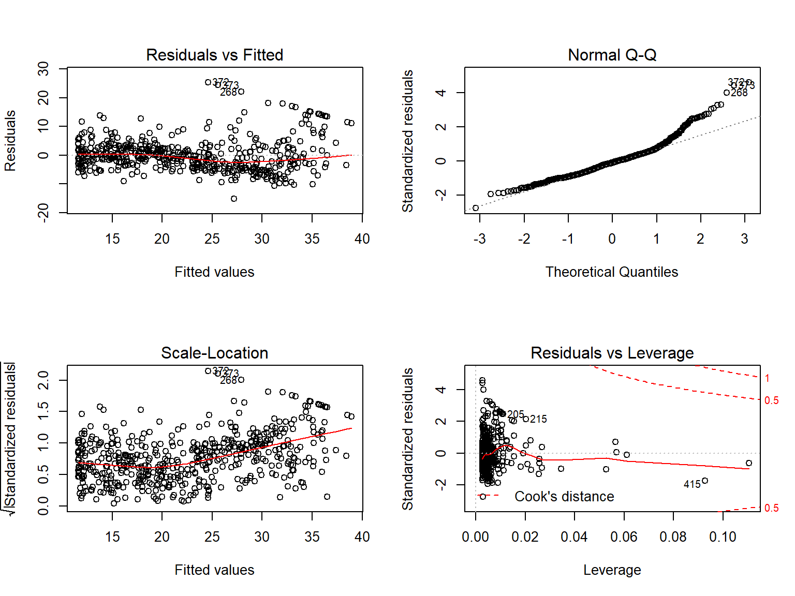

2 Linear Regression
This chapter is about linear regression, a very simple approach for supervised learning. In particular, linear regression is a useful tool for predicting a quantitative response. Linear regression has been around for a long time and is the topic of innumerable textbooks. Though it may seem somewhat dull compared to some of the more modern statistical learning approaches described in later chapters of this book, linear regression is still a useful and widely used statistical learning method. Moreover it serves as a good jumping-off point for newer approaches: as we will see in later chapters, many fancy statistical learning approaches can be seen as generalizations or extensions of linear regression. Consequently, the importance of having a good understanding of linear regression before studying more complex learning methods cannot be overstated. In this chapter, we review some of the key ideas of the linear regression model, as well as the least squares approach that is most commonly used to fit this model.
Recall the Advertising data from Chapter 2.
Figure 2.1 displays sales (in thousands of units) for a particular product as a function of advertising budgets (in thousands of dollars) for TV, radio, and newspaper media.
Suppose in our role as statistical consultants we are asked to suggest, on the basis of this data, a marketing plan for next year that will result in high product sales.
What information would be useful in order to provide such a recommendation?
Here are a few important questions that we might seek to address:
Is there a relationship between advertising budget and sales?
Our first goal should be to determine whether the data provide evidence of an association between advertising expenditure and sales. If the evidence is weak, then one might argue no money should be spent on advertising!How strong is the relationship between advertising budget and sales?
Assuming there is a relationship between advertising and sales, we would like to know the strength of that relationship. In other words, given a certain advertising budget, can we predict sales with a high level of accuracy? This would be a strong relationship. Or is a prediction of sales based on advertising expenditure only slightly better than a random guess? This would be a weak relationship.Which media contribute to sales?
Do all three media - TV, radio, and newspaper - contribute to sales, or do only one or two of the media contribute? To answer this question, we must find a way to separate out the individual effects of each medium when we have spent the mony on all three media.How accurately can we estimate the effect of each medium on sales?
For every dollar spent on advertising in a particular medium, by what amount will sales increase? How accurately can we predict this amount of increase?How accurately can we predict future sales?
For every given level of television, radio, and newspaper sales, what is our prediction for sales, and what is the accuracy of this prediction?Is the relationship linear?
If there is an approximately straight-line relationship between advertising expenditure in the various media and sales, then linear regression is an appropriate tool. If not, then it may still be possible to transform the predictor of the response so that linear regression can be used.Is there synergy among the advertising media?
Perhaps spending $50,000 on television advertising and $50,000 on radio advertising results in more sales than allocating $100,000 in either television or radio individually. In marketing, this is known as a synergy effect, while in statistics it is called an interaction effect.
It turns out that linear regression can be used to answer each of these questions. We will first discuss all of these questions in a general context, and then return to them in this specific context in Section 3.4.
2.1 Simple Linear Regression
Simple linear regression lives up to its name: it is a very straightforward approach for predicting a quantitative response Y on the basis of a single predictor variable X. It assumes that there is an approximately linear relationship between X and Y. Mathematically we can write this linear relationship as
\[\begin{equation} Y \approx \beta_0 + \beta_1X \tag{2.1} \end{equation}\]
You might read “\(\approx\)” as “is approximately modeled as”.
We will sometimes describe (2.1) by saying we are regressing Y on X (or Y onto X).
For example, X may represent TV advertising and Y may represent sales.
Then we can regress sales onto TV by fitting the model:
\[ \color{#B44C1C}{\textbf{sales}} = \beta_0+\beta_1\times\color{#B44C1C}{\textbf{TV}} \]
In Equation (2.1), \(\beta_0\) and \(\beta_1\) are two unknown constants that represent the intercept and the slope terms in the linear model. Together, \(\beta_0\) and \(\beta_1\) are known as the model coefficients or parameters. Once we have used our training data to produce estimates \(\hat{\beta_0}\) and \(\hat{\beta_1}\) for our model parameters, we can predict future sales on the basis of a particular value of TV advertising by computing
\[\begin{equation} \hat{y} = \hat{\beta_0} + \hat{\beta_1}x \tag{2.2} \end{equation}\]
where \(\hat{y}\) indicates a prediction of \(Y\) on the basis of \(X=x\). Here we use the hat symbol, ^ , to denote the estimated value of an unknown parameter or coefficient, or to denote the predicted value of the response.
2.1.1 Estimating the Coefficients
In practice, \(\beta_0\) and \(\beta_1\) are unknown. So before we can use (2.1) to make predictions, we must use data to estimate the coefficients. Let
\[(x_1, y_1), (x_2, y_2), ..., (x_n, y_n)\]
represent n observation pairs, each of which consists of a measurement of X and a measurement of Y.
In the Advertising example, this data set consists of the TV advertising budget and product sales in \(n = 200\) different markets.
(Recall that the data are displayed in Figure 2.1.)
Our goal is to obtain coefficient estimates \(\hat{\beta_0}\) and \(\hat{\beta_1}\) such that the linear model (2.1) fits the available data well—that is, so that \(y_i \approx \hat{\beta_0}+\hat{\beta_1}x_i\) for \(i = 1,...,n\).
In other words, we want to find an intercept b0 and a slope b1 such that the resulting line is as close as possible to the \(n = 200\) data points.
There are a number of ways of measuring closeness.
However, by far the most common approach involves minimizing the least squares criterion, and we take that approach in this chapter.
Alternative approaches will be considered in Chapter 6.
# Fit linear model regressing Sales on TV
adv_lm = lm(sales~TV, advertising)
# Add the predicted values to the advertising dataframe
advertising %>%
mutate(predicted = adv_lm$fitted.values) %>%
ggplot(., aes(x=TV, y = sales))+
geom_point(colour = "red")+
geom_segment(aes(xend = TV, yend = predicted), colour = "grey40")+
stat_smooth(method = "lm", se = F, fullrange = T)+
scale_x_continuous(n.breaks = 6)+
scale_y_continuous(breaks = c(5,10,15,20,25))+
labs(y = "Sales")+
theme_islr()![*For the <strong><span style='font-family:monospace; color: #B44C1C;'>Advertising</span></strong> data, the least squares fit for the regression of <strong><span style='font-family:monospace; color: #B44C1C;'>sales</span></strong> onto <strong><span style='font-family:monospace; color: #B44C1C;'>TV</span></strong> is shown. The fit is found by minimizing the sum of squared errors. Each grey line segment represents an error, and the fit makes a compromise by averaging their squares. In this case a linear fit captures the essence of the relationship, although it is somewhat deficient in the left of the plot.*](03-linear-regression_files/figure-html/advertising-lm-1.png)
FIGURE 2.1: For the Advertising data, the least squares fit for the regression of sales onto TV is shown. The fit is found by minimizing the sum of squared errors. Each grey line segment represents an error, and the fit makes a compromise by averaging their squares. In this case a linear fit captures the essence of the relationship, although it is somewhat deficient in the left of the plot.
Let \(\hat{y_i} = \hat{\beta_0}+\hat{\beta_1}x_i\) be the prediction for \(Y\) based on the ith value of \(X\). Then \(e_i = y_i - \hat{y_i}\) represents the ith residual—this is the difference between the ith observed response value and the ith response value that is predicted by our linear model. We define the residual sum of squares (RSS) as \[RSS = {e_1^2}+{e_2^2}+...+{e_n^2},\] or equivalently as
\[\begin{equation} RSS = (y_1 - \hat{\beta_0} - \hat{\beta_1}x_1)^2 + (y_2 - \hat{\beta_0} - \hat{\beta_1}x_2)^2 + ... + (y_n - \hat{\beta_0} - \hat{\beta_1}x_n)^2. \tag{2.3} \end{equation}\]
The least squares approach chooses \(\hat{\beta_0}\) and \(\hat{\beta_1}\) to minimize the RSS. Using some calculus, one can show that the minimizers are
\[\begin{equation} \begin{aligned} \hat{\beta_1} &= \frac{\sum_{i=1}^{n}(x_i - \bar{x})(y_i-\bar{y})}{\sum_{i=1}^{n}(x_i-\bar{x})^2},\\ \hat{\beta_0} &= \bar{y}-\hat{\beta_1}\bar{x}, \end{aligned} \tag{2.4} \end{equation}\]
where \(\bar{y} \equiv \frac{1}{n}\sum_{i=1}^{n}y_i\) and \(\bar{x} \equiv \frac{1}{n}\sum_{i=1}^{n}x_i\) are the sample means. In other words, (2.4) defines the least squares coefficient estimates for simple linear regression.
2.1 displays the simple linear regression fit to the Advertising data, where \(\hat{\beta_0} = 7.03\) and \(\hat{\beta_1} = 0.0475\).
In other words, according to this approximation, an additional $1,000 spent on TV advertising is associated with selling approximately 47.5 additional units of the product.
In Figure 3.2, we have computed RSS for a number of values of \(\beta_0\) and \(\beta_1\), using the advertising data with sales as the response and TV as the predictor.
In each plot, the red dot represents the pair of least squares estimates \((\hat{\beta_0}, \hat{\beta_1})\) given by (2.4).
These values clearly minimize the RSS.
[FIGURE 3.2 HERE]
2.1.2 Assessing the Accuracy of the Coefficient Estimates
Recall from Equation (2.1) that we can assume that the true relationship between \(X\) and \(Y\) takes the form \(Y = f(X)+\epsilon\) for some unknown function \(f\), where \(\epsilon\) is a mean-zero random error term. If \(f\) is to be approximated by a linear function, then we can write this relationship as
\[\begin{equation} Y = \beta_0+\beta_1X + \epsilon. \tag{2.5} \end{equation}\]
Here \(\beta_0\) is the intercept term—that is, the expected value of \(Y\) when \(X=0\) and \(\beta_1\) is the slope—the average increase in \(Y\) associated with a one-unit increase in \(X\). The error term is a catch-all for what we miss with this simple model: the true relationship is probably not linear, there may be other variables that cause variation in \(Y\), and there may be measurement error. We typically assume that the error term is independent of \(X\).
The model given by (2.5) defines the population regression line, which is the best linear approximation to the true relationship between \(X\) and \(Y\).1 The least squares regression coefficient estimates (2.4) characterize the least squares line (2.2).
[FIGURE 3.3 HERE]
The left-hand panel of Figure 3.3 displays these two lines in a simple simulated example. We created 100 random Xs, and generated 100 corresponding Ys from the model
\[\begin{equation} Y = 2+3X+\epsilon \tag{2.6} \end{equation}\]
where \(\epsilon\) was generated from a normal distribution with mean zero. The red line in the left-hand panel of Figure 3.3 displays the true relationship, \(f(X) = 2 + 3X\), while the blue line is the least squares estimate based on the observed data. The true relationship is generally not known for real data, but the least squares line can always be computed using the coefficient estimates given in (2.4). In other words, in real applications, we hav eaccess to a set of observations from which we can compute the lease squares line; however, the population regression line is unobserved. In the right-hand panel of Figure 3.3 we have generated ten different data sets from the model given by (2.6) and plotted the corresponding ten least squares lines. Notice that different data sets generated from the same true model result in slightly different least squares lines, but the unobserved population regression line does not change.
At first glance, the difference between the population regression line and the least squares line may seem subtle and confusing.
We only have one data set, and so what does it mean that two different lines describe the relationship between the predictor and the response?
Fundamentally the concept of these two lines is a natural extension of the standard statistical approach of using information from a sample to estimate characteristics of a large population.
For example, suppose that we are interested in knowing the population mean \(\mu\) of some random variable \(Y\).
Unfortunately, \(\mu\) is unknoqn, but we do have access to \(n\) observations from \(Y\), which we can write as \(y_1, ..., y_n\), and which we can use to estimate \(\mu\).
A reasonable estimate is \(\hat{\mu} = \bar{y}\), where \(\bar{y} = \frac{1}{n}\sum^{n}_{i=1}{y_i}\) is the sample mean.
The sample mean and the population mean are different, but in general the sample mean will provide a good estimate of the population mean.
In the same way, the unknown coefficients \(\beta_0\) and \(\beta_1\) in linear regression define the population regression line.
We seek to estimate these unknown coefficients using \(\hat{\beta_0}\) and \(\hat{\beta_1}\) given in (2.4).
These coefficient estimates define the least squares line.
The analogy between linear regression and estimation of the mean of a random variable is an apt one based on the concept of bias.
If we use the sample mean \(\hat{\mu}\) to estimate \(\mu\), this estimate is unbiased, in the sense that on average, we expect \(\hat{\mu}\) to equal \(\mu\).
What exactly does this mean?
It means that on the basis of one particular set of observations \(y_1,...,y_n,\; \hat{\mu}\) might overestimate \(\mu\), and on the basis of another set of observations, \(\hat{\mu}\) might underestimate \(\mu\).
But if we could average a huge number of estimates of \(\mu\) obtained from a huge number of sets of observations, then this average would exactly equal \(\mu\).
Hence, an unbiased estimator does not _systematically) over- or under-estimate the true parameter.
The property of unbiasedness holds for the least squares coefficient estimates given by (2.4) as well: if we estimate \(\beta_0\) and \(\beta_1\) on the basis of a particular data set, then the average of these estimates would be spot on!
In fact, we can see from the right-hand panel on Figure 3.3 that the average of many least squares lines, each estimated from a separate data set, is pretty close to the true population regression line.
We continue the analogy with the estimation of the population mean \(\mu\) of a random variable \(Y\).
A natural question is as follows: how accurate is the sample mean \(\hat{\mu}\) as an estimate of \(\mu\)?
We have established that the average of \(\hat{\mu}\)’s over many data sets will be very close to \(\mu\), but that a single estimate \(\hat{\mu}\) may be a substantial underestimate or overestimate of \(\mu\).
How far off will that single estimate of \(\hat{\mu}\) be?
In general, we answer this question by computing the standard error of \(\hat{\mu}\), written as \(SE(\hat{\mu})\).
We have the well-known formula
\[\begin{equation} Var(\hat{\mu}) = SE(\hat{\mu})^2 = \frac{\sigma^2}{n} \tag{2.7} \end{equation}\]
where \(\sigma\) is the standard deviation of each of the realizations \(y_i\) of \(Y\).2 Roughly speaking, the standard error tells us the average amount that this estimate \(\hat{\mu}\) differs from the actual value of \(\mu\). Equation (2.7) also tells us how this deviation shrinks with n—themore observations we have, the smaller the standard error of \(\hat{\mu}\). In a similar vein, we can wonder how close \(\hat{\beta_0}\) and \(\hat{\beta_1}\) are to the true values \(\beta_0\) and \(\beta_1\)/ To compute the standard errors associated with \(\hat{\beta_0}\) and \(\hat{\beta_1}\), we use the following formulas:
\[\begin{equation} SE(\hat{\beta_0})^2 = \sigma^2 \left[ \frac{1}{n} + \frac{\bar{x}^2}{\sum_{i=1}^n (x_i - \bar{x})^2} \right] , \hspace{1cm} SE(\hat{\beta_1})^2 = \frac{\sigma^2}{\sum_{i=1}^n (x_i - \bar{x})^2} , \tag{2.8} \end{equation}\]
where \(\sigma^2 = Var(\epsilon)\). For these formulas to be strictly valid, we need to assume that the errors \(\epsilon_i\) for each observation are uncorrelated with common variance \(\sigma^2\). This is clearly not true in Figure 2.1, but the formula still turns out to be a good approximation. Notice in the formula that \(SE(\hat{\beta_1}\) is smaller when the \(x_i\) are more spread out; intuitively we have more leverage to estimate a slope when this is the case. We also see that \(SE(\hat{\beta_0})\) would be the same as \(SE(\hat{\mu})\) if \(\bar{x}\) were zero (in which case \(\hat{\beta_0}\) would be equal to \(\bar{y}\)). In general, \(\sigma^2\) is not known, but can be estimated from the data. The estimate of \(\sigma\) is known as the residual standard error, and is given by the formula \(RSE = \sqrt{RSS/(n-2)}\). Strictly speaking, when \(\sigma^2\) is estimated from the data we should write \(\widehat{SE}(\hat{\beta_1})\) to indicate that an estimate has been made, but for simplicity of notation we will drop this extra “hat”.
Standard errors can be used to compute confidence intervals. A 95% confidence interval is defined as a range of values such that with 95% probability, the range will contain the true unknown value of the parameter. The range is defined in terms of lower and upper limits computed from the sample of data. For linear regression, the 95% confidence interval for \(\beta_1\) approximately takes the form
\[\begin{equation} \hat{\beta_1} \pm 2 \cdot SE(\hat{\beta_1}). \tag{2.9} \end{equation}\]
That is, there is approximately a 95% chance that the interval
\[\begin{equation} \left[ \hat{\beta_1} - 2 \cdot SE(\hat{\beta_1}), \hat{\beta_1} + 2 \cdot SE(\hat{\beta_1}) \right] \tag{2.10} \end{equation}\]
will contain the true value of \(\beta_1\).3 Similarly, a confidence interval for \(\beta_0\) approximately takes the form
\[\begin{equation} \hat{\beta_0} \pm 2 \cdot SE(\hat{\beta_0}). \tag{2.11} \end{equation}\]
In the case of the advertising data, the 95% confidence interval for \(\beta_0\) is \([6.130, 7.935]\) and the 95% confidence interval for \(\beta_1\) is \([0.042, 0.053]\). Therefore, we can conclude that in the absence of any advertising, sales will, on average, fall somewhere between 6,130 and 7,940 units. Furthermore, for each $1,000 increase in television advertising, there will be an average increase in sales of between 42 and 53 units.
Standard errors can also be used to perform hypothesis tests on the coefficients. The most common hypothesis test involves testing the null hypothesis of
\[\begin{equation} H_0: \mathrm{There\ is\ no\ relationship\ between}\ X\ \mathrm{and}\ Y \tag{2.12} \end{equation}\]
versus the alternative hypothesis
\[\begin{equation} H_a: \mathrm{There\ is\ some\ relationship\ between}\ X\ \mathrm{and}\ Y. \tag{2.13} \end{equation}\]
Mathematically, this corresponds to testing
\[H_0: \beta_1 = 0\]
versus
\[H_a: \beta_1 \neq 0.\]
since if \(\beta_1 = 0\) then the model (2.5) reduces to \(Y = \beta_0 + \epsilon\), and \(X\) is not associated with \(Y\). To test the null hypothesis, we need to determine whether \(\hat{\beta_1}\), our estimate for \(\beta_1\), is sufficiently far from zero that we can be confident that \(\beta_1\) is non-zero. How far is enough? This of course depends on the accuracy of \(\hat{\beta_1}\)—that is, it depends on \(SE(\hat{\beta_1})\). If \(SE(\hat{\beta_1})\) is small, then even relatively small values of \(\hat{\beta_1}\) may provide strong evidence that \(\beta_1 \neq 0\), and hence that there is a relationship between \(X\) and \(Y\). In contrast, if \(SE(\hat{\beta_1})\) is large, then \(\hat{\beta_1}\) must be large in absolute value in order for us to reject the null hypothesis. In practice, we compute a t-statistic, give by
\[\begin{equation} t = \frac{\hat{\beta_1}-0}{SE(\hat{\beta_1})} , \tag{2.14} \end{equation}\]
which measures the number of standard deviations that \(\hat{\beta_1}\) is away from 0. If there really is no relationship between \(X\) and \(Y\), then we expect that (2.14) will have a t-distribution with \(n-2\) degrees of freedom. The t-distribution has a bell shape and for values of n greater than approximately 30 it is quite similar to the normal distribution. Consequently, it is a simple matter to compute the probability of observing any number equal to \(|t|\) or larger in absolute value, assuming \(\beta_1 = 0\). We call this probability the p-value. Roughly speaking, we interpret the p-value as follows: a small p-value indicates that it is unlikely to observe such a substantial association between the predictor and the response due to chance, in the absence of any real association between the predictor and the response. Hence, if we see a small p-value, then we can infer that there is an association between the predictor and the response. We reject the null hypothesis—that is, we declare a relationship to exist between \(X\) and \(Y\)—if the p-value is amll enough. Typical p-value cutoffs for rejecting the null hypothesis are 5 or 1%. When \(n=30\), these correspond to t-statistics (2.14) of around 2 and 2.75, respectively.
{ Table 3.1 goes here }
Table 3.1 provides details of the least squares model for the regression of number of units sold on TV advertising budget for the Advertising data.
Notice that the coefficients for \(\hat{\beta_0}\) and \(\hat{\beta_1}\) are very large relative to their standard errors, so the t-statistics are also large; the probabilities of seeing such values if \(H_0\) is true are virtually zero.
Hence we can conclude that \(\beta_0 \neq 0\) and \(\beta_1 \neq 0\).4
2.1.3 Assessing the Accuracy of the Model
Once we have rejected the null hypothesis (2.12) in favor of the alternative hypothesis (2.13), it is natural to want to quantify the extent to which the model fits the data. The quality of a linear regression fit is typically assessed using two related quantities: the residual standard error and the \(\color{#1188ce}{R^2}\) statistic.
Table 3.2 displays the RSE, the \(R^2\) statistic, and the F-statistic (to be described in Section 3.2.2) for the linear regression of number of units sold on TV advertising budget.
Residual Standard Error
Recall from the model (2.5) that associated with each observation is an error term \(\epsilon\). Due to the presence of these error terms, even if we knew the true regression line (i.e. even if \(\beta_0\) and \(\beta_1\) were known), we would not be able to perfectly predict \(Y\) from \(X\). The RSE is an estimate of the standard deviation of \(\epsilon\).
{Table 3.2 goes here}
Roughly speaking, it is the average amount that the response will deviate from the true regression line. It is computed using the formula
\[\begin{equation} RSE = \sqrt{\frac{1}{n-2}RSS} = \sqrt{\frac{1}{n-2} \sum_{i=1}^{n} (y_i - \hat{y_i})^2} . \tag{2.15} \end{equation}\]
Note that RSS was defined in Section 3.1.1, and is given by the formula
\[\begin{equation} RSS = \sum_{i=1}^{n} (y_i - \hat{y_i})^2 . \tag{2.16} \end{equation}\]
In the case of the advertising data, we see from the linear regression output in Table 3.2 that the RSE is 3.26.
In other words, actual sales in each market deviate from the true regression line by approximately 3,260 units, on average.
Another way to think about this is that even if the model were correct and the true values of the unknown coefficients \(\beta_0\) and \(\beta_1\) were known exactly, any prediction of sales on the basis of TV advertising would still be off by about 3,260 units on average.
Of course, whether or not 3,260 units is an acceptable prediction error depends on the problem context.
In the advertising data set, the mean value of sales over all markets is approximately 14,000 units, and so the percentage error is \(3,260/14,000 = 23\%\).
The RSE is considered a measure of the lack of fit of the model (2.5) to the data. If the predictions obtained using the model are very close to the true outcome values—that is, if \(\hat{y_i} \approx y_i\) for \(i = 1, ..., n\)—then (2.15) will be small, and we can conclude that the model fits the data very well. On the other hand, if \(\hat{y_i}\) is very far from \(y_i\) for one or more observations, then the RSE may be quite large, indicating that the model doesn’t fit the data well.
R2 Statistic
The RSE provides an absolute measure of lack of fit of the model (2.5) to the data. But since it is measured in the units of \(Y\), it is not always clear what constitutes a good RSE. The \(R^2\) statistic provides an alternative measure of fit. It takes the form of a proportion—the proportion of variance explained—and so it always takes on a value between 0 and 1, and is independent of the scale of \(Y\).
To calculate \(R^2\), we use the formula
\[\begin{equation} R^2 = \frac{TSS-RSS}{TSS} = 1 - \frac{RSS}{TSS} \tag{2.17} \end{equation}\]
where \(TSS = \sum (y_i - \bar{y})^2\) is the total sum of squares, and the RSS is defined in (2.16).
TSS measures the total variance in the response \(Y\), and can be thought of as the amount of variability inherent in the response before the regression is performed.
In contrast, RSS measures the amount of variability that is left unexplained after performing the regression.
Hence, \(TSS - RSS\) measures the amount of variability in the response that is explained (or removed) by performing the regression, and \(R^2\) measures the proportion of variability in Y that can be explained using X.
An \(R^2\) statistic that is close to 1 indicates that a large proportion of the variability in the response has been explained by the regression.
A number near 0 indicates that the regression did not explain much of the variability in the response; this might occur because the linear model is wrong, or the inherent error \(\sigma^2\) is high, or both.
In Table 3.2, the \(R^2\) was 0.61, and so just under two-thirds of the variability in sales is explained by a linear regression on TV.
The \(R^2\) statistic is a measure of the linear relationship between \(X\) and \(Y\). Recall that correlation, defined as
\[\begin{equation} Cor(X,Y) = \frac{\sum_{i=1}^{n}(x_i - \bar{x})(y_i - \bar{y})}{\sqrt{\sum_{i=1}^{n} (x_i - \bar{x})^2} \sqrt{\sum_{i=1}^{n} (y_i - \bar{y})^2}}, \tag{2.18} \end{equation}\]
is also a measure of the linear relationship between \(X\) and \(Y\).5 This suggests that we might be able to use \(r = Cor(X,Y)\) instead of \(R^2\) in order to assess the fit of the linear model. In fact, it can be shown that in the simple linear regression setting, \(R^2 = r^2\). In other words, the squared correlation and the \(R^2\) statistic are identical. However, in the next section we will discuss the multiple linear regression problem, in which we use several predictors simultaneously to predict the response. The concept of correlation between the predictors and the response does not extend automatically to this setting, since correlation quantifies the association between a single pair of variables rather than between a larger number of variables. We will see that \(R^2\) fills this role.
2.2 Multiple Linear Regression
Simple linear regression is a useful approach for predicting a response on the basis of a single predictor variable.
However, in practice we often have more than one predictor.
For example, in the Advertising data, we have examined the relationship between sales and TV advertising.
We also have data for the amount of money spent on advertising on the radio and in newspapers, and we may want to know whether either of these two media is associated with sales.
How can we extend our analysis of the advertising data in order to accommodate these two additional predictors?
One option is to run three separate simple linear regressions, each of which uses a different advertising medium as a predictor. For instance, we can fit a simple linear regression to predict sales on the basis of the amount spent on radio advertisements. Results are shown in Table 3.3 (top table). We find that a $1,000 increase in spending on radio advertising is associated with an increase in sales by around 203 units. Table 3.3 (bottom table) contains the least squares coefficients for a simple linear regression of sales onto newspaper advertising budget. A $1,000 increase in newspaper advertising budget is associated with an increase in sales by approximately 55 units.
However, the approach of fitting a separate simple linear regression model for each predictor is not entirely satisfactory. First of all, it is unclear how to make a single prediction of sales given levels of the three advertising media budgets, since each of the budgets is associated with a separate regression equation. Second, each of the three regression equations ignores the other two media in forming estimates for the regression coefficients. We will see shortly that if the media budgets are correlated with each other in the 200 markets that constitute our data set, then this can lead to very misleading estimates of the individual media effects on sales.
Instead of fitting a separate simple linear regression model for each predictor, a better approach is to extend the simple linear regression model (2.5) so that it can directly accommodate multiple predictors. We can do this by giving each predictor a separate slope coefficient in a single model. In general, suppose that we have p distinct predictors. Then the multiple linear regression model takes the form
\[\begin{equation} Y = \beta_0+\beta_1X_1 +\beta_2X_2 + ... +\beta_pX_p + \epsilon, \tag{2.19} \end{equation}\]
where \(X_j\) represents the jth predictor and \(\beta_j\) quantifies the association between that variable and the response. We interpret \(\beta_j\) as the average effect on \(Y\) of a one unit increase in \(X_j\), holding all other predictors fixed. In the advertising example, (2.19) becomes
\[\begin{equation} \color{#B44C1C}{\textbf{sales}} = \beta_0 + \beta_1 \times \color{#B44C1C}{\textbf{TV}}+\beta_2 \times \color{#B44C1C}{\textbf{radio}}+\beta_3 \times \color{#B44C1C}{\textbf{newspaper}}+ \epsilon. \tag{2.20} \end{equation}\]
2.2.1 Estimating the Regression Coefficients
As was the case in the simple linear regression setting, the regression coefficients \(\beta_0, \beta_1, ..., \beta_p\) in (2.19) are unknown, and must be estimated. Given estimates \(\hat{\beta_0}, \hat{\beta_1}, ..., \hat{\beta_p}\), we can make predictions using the formula
\[\begin{equation} \hat{y} = \hat{\beta_0}+\hat{\beta_1}x_1 +\hat{\beta_2}x_2 + ... +\hat{\beta_p}x_p + \epsilon, \tag{2.21} \end{equation}\]
The parameters are estimated using the same least squares approach that we saw in the context of simple linear regression. We choose \(\beta_0, \beta_1, ..., \beta_p\) to minimize the sum of squared residuals
\[\begin{equation} \begin{aligned} RSS &= \sum_{i=1}^{n} (y_i-\hat{y})^2 \\ &= \sum_{i=1}^{n} (y_i-\hat{\beta_0} - \hat{\beta_1}x_{i1} - \hat{\beta_2}x_{i2} - ... - \hat{\beta_p}x_{ip})^2. \end{aligned} \tag{2.22} \end{equation}\]
The values \(\hat{\beta_0}, \hat{\beta_1}, ..., \hat{\beta_p}\) that minimize (2.22) are the multiple least squares regression coefficient estimates.
Unlike the simple linear regression estimates given in (2.4), the multiple regression coefficient estimates have somewhat complicated forms that are most easily represented using matrix algebra.
For this reason, we do not provide them here.
Any statistical software package can be used to compute these coefficient estimates, and later in this chapter we will show how this can be done in R.
Figure 3.4 illustrates an example of the least squares fit to a toy data set with \(p = 2\) predictors.
Table 3.4 displays the multiple regression coefficient estimates when TV, radio, and advertising budgets are used to predict product sales using the Advertising data.
We interpret these results as follows: for a given amount of TV and newspaper advertising, spending an additional $1,000 on radio advertising leads to an increase in sales by approximately 189 units.
Comparing these coefficient estimates to those displayed in Table 3.1 and 3.3, we notice that the multiple regression coefficient estimates for TV and radio are pretty similar to the simple linear regression coefficient estimates.
However, while the newspaper regression coefficient estimate in Table 3.3 was significantly non-zero, the coefficient estimate for newspaper in the multiple regression model is close to zero, and the corresponding p-value is no longer significant, with a value around 0.86.
# estimate linear model
advertising_mlin_reg = lm(sales~TV+radio+newspaper, data = advertising)
# Clean up the model output
prep_reg_table(advertising_mlin_reg) %>%
# use reactable to produce the table
reactable(
borderless = T,
sortable = F,
defaultColDef = colDef(format = colFormat(digits = 3)),
# Specific column formats
columns = list(
term = colDef(
name = "",
style = list(borderRight = "2px solid black",
color = "#B44C1C",
fontFamily = "Roboto Mono"),
headerStyle = list(borderRight = "2px solid black")),
`t-statistic` = colDef(format = colFormat(digits = 2))
)
)
# Put the caption beneath the table
rt_caption(
text = str_c("For the ", data_colour("Advertising"), " data, least squares coefficient estimates of the multiple linear regression of number of units sold on radio, TV, and newspaper advertising budgets."),
tab_num = 3.4
)TABLE 3.4. For the Advertising data, least squares coefficient estimates of the multiple linear regression of number of units sold on radio, TV, and newspaper advertising budgets.
This illustrates that the simple and multiple regression coefficients can be quite different.
This difference stems from the fact that in the simple regression case, the slope term represents the average effect of a $1,000 increase in newspaper advertising, ignoring other predictors such as TV and radio.
In contrast, in the multiple regression setting, the coefficient for newspaper represents the average effect of increasing newspaper spending by $1,000 while holding TV and radio fixed.
Does it make sense for the multiple regression to suggest no relationship between sales and newspaper while the simple linear regression implies the opposite?
In fact it does.
Consider the correlation matrix for the three predictor variables and response variable, displayed in Table 3.5.
Notice that the correlation between radio and newspaper is 0.35.
This reveals a tendency to spend more on newspaper advertising in markets where more is spent on radio advertising.
Now suppose that the multiple regression is correct and newspaper advertising has no direct impact on sales, but radio advertising does increase sales.
Then in markets where we spend more on radio our sales will tend to be higher, and as our correlation matrix shows, we also tend to spend more on newspaper advertising in those same markets.
Hence, in a simple linear regression which only examines sales versus newspaper, we will observe that higher values of newspaper tend to be associated with higher values of sales, even though newspaper advertising does not actually affect sales.
So newspaper sales are a surrogate for radio advertising; newspaper gets “credit” for the effect of radio on sales.
This slightly counterintuitive result is very common in many real life situations.
Consider an absurd example to illustrate the point.
Running a regression of shark attacks versus ice cream sales for data collected at a given beach community over a period of time would show a positive relationship, similar to that seen between sales and newspaper.
Of course no one (yet) has suggested that ice creams should be banned at beaches to reduce shark attacks.
In reality, higher temperatures cause more people to visit the beach, which in turn results in more ice cream sales and more shark attacks.
A multiple regression of attacks versus ice cream sales and temperature reveals that, as intuition implies, the former predictor is no longer significant after adjusting for temperature.
2.2.2 Some Important Questions
When we perform multiple linear regression, we usually are interested in answering a few important questions.
Is at least one of the predictors \(X_1 , X_2 , ... , X_p\) useful in predicting the response?
Do all the predictors help to explain \(Y\), or is only a subset of the predictors useful?
How well does the model fit the data?
Given a set of predictor values, what response value should we predict, and how accurate is our prediction?
We now address each of these questions in turn.
2.2.2.1 One: Is There a Relationship Between the Response and Predictors?
Recall that in the simple linear regression setting, in order to determine whether there is a relationship between the response and the predictor we can simply check whether \(\beta_1 = 0\). In the multiple regression setting with \(p\) predictors, we need to ask whether all of the regression coefficients are zero, i.e. whether \(\beta_1 = \beta_2 = ... = \beta_p = 0\). As in the simple linear regression setting, we use a hypothesis test to answer this question. We test the null hypothesis,
\[H_0: \beta_1 = \beta_2 = ... = \beta_p = 0\]
versus the alternative
\[H_a: \mathrm{at\ least\ one\ \beta_j\ is\ non-zero}\]
This hypothesis test is performed by computing the F-statistic,
\[\begin{equation} F = \frac{(TSS-RSS)/p}{RSS/(n-p-1)}, \tag{2.23} \end{equation}\]
where, as with simple linear regression, \(TSS = \sum{(y_i - \bar{y})^2}\) and \(RSS = \sum{(y_i - \hat{y_i})^2}\). If the linear model assumptions are correct, one can show that
\[ E\{RSS/(n-p-1)\} = \sigma^2 \]
and that, provided \(H_0\) is true.
\[ E\{TSS-RSS/p\} = \sigma^2. \]
Hence, when there is no relationship between the response and predictors, one would expect the F-statistic to take on a value close to 1. On the other hand, if \(H_a\) is true, then $ E{TSS-RSS/p} > ^2 $, so we expect \(F\) t obe greater than 1.
The F-statistic for the multiple linear regression model obtained by regressing sales onto radio, TV, and newspaper is shown in Table 3.6.
In this example the F-statistic is 570.
Since this is far larger than 1, it provides compelling evidence against the null hypothesis \(H_0\).
In other words, the large F-statistic suggests that at least one of the advertising media must be related to sales.
However, what if the F-statistic had been closer to
1? How large does the F-statistic need to be before we can reject \(H_0\) and conclude that there is a relationship?
It turns out that the answer depends on the values of \(n\) and \(p\).
When \(n\) is large, an F-statistic that is just a little larger than 1 might still provide evidence against \(H_0\).
In contrast, a larger F-statistic is needed to reject \(H_0\) if \(n\) is small.
When \(H_0\) is true, and the errors \(\epsilon_i\) have a normal distribution, the F-statistic follows an F-distribution.6
For any given value of \(n\) and \(p\), any statistical software package can be used to compute the p-value associated with the F-statistic using this distribution.
Based on this p-value, we can determine whether or not to reject \(H_0\).
For the advertising data, the p-value associated with the F-statistic in Table 3.6 is essentially zero, so we have extremely strong evidence that at least one of the media is associated with increased sales.
In (2.23) we are testing \(H_0\) that all the coefficients are zero. Sometimes we want to test that a partiuclar subset of \(q\) of the coefficients are zero. This corresponds to a null hypothesis
\[H_0: \beta_{p-q+1} = \beta_{p-q+2} = ... = \beta_p = 0.\]
where for convenience we have put the variables chosen for omission at the end of the list. In this case we fit a second model that uses all the variables except those last \(q\). Suppose that the residual sum of squares for that model is \(RSS_0\). Then the appropriate F-statistic is
\[\begin{equation} F = \frac{(RSS_0 - RSS)/q}{RSS/(n-p-1)}. \tag{2.24} \end{equation}\]
Notice that in Table 3.4, for each individual predictor a t-statistic and a p-value were reported.
These provide information about whether each individual predictor is related to the response, after adjusting for the other predictors.
It turns out that each of these are exactly equivalent7 to the F-test that omits that single variable from the model, leaving all others in—i.e. \(q=1\) in (2.24).
So it reports the partial effect of adding that variable to the model.
For instance, as we discussed earlier, these p-values indicate that TV and radio are related to sales, but that there is no evidence that newspaper is associated with sales, in the presence of these two.
Given these individual p-values for each variable, why do we need to look at the overall F-statistic? After all, it seems likely that if any one of the p-values for the individual variables is very small, then at least one of the predictors is related to the response. However, this logic is flawed, especially when the number of predictors p is large.
For instance, consider an example in which \(p = 100\) and \(H_0: \beta_1 = \beta_2 = ... = \beta_p = 0\)is true, so no variable is truly associated with the response. In this situation, about 5% of the p-values associated with each variable (of the type shown in Table 3.4) will be below 0.05 by chance. In other words, we expect to see approximately five small p-values even in the absence of any true association between the predictors and the response. In fact, we are almost guaranteed that we will observe at least one p-value below 0.05 by chance! Hence, if we use the individual t-statistics and associated p-values in order to decide whether or not there is any association between the variables and the response, there is a very high chance that we will incorrectly conclude that there is a relationship. However, the F-statistic does not suffer from this problem because it adjusts for the number of predictors. Hence, if \(H_0\) is true, there is only a 5% chance that the F-statistic will result in a p-value below 0.05, regardless of the number of predictors or the number of observations.
The approach of using an F-statistic to test for any association between the predictors and the response works when \(p\) is relatively small, and certainly small compared to \(n\). However, sometimes we have a very large number of variables. If \(p > n\) then there are more coefficients \(\beta_j\) to estimate than observations from which to estimate them. In this case we cannot even fit the multiple linear regression model using least squares, so the F-statistic cannot be used, and neither can most of the other concepts that we have seen so far in this chapter. When \(p\) is large, some of the approaches discussed in the next section, such as forward selection, can be used. This high-dimensional setting is discussed in greater detail in Chapter 6.
2.2.2.2 Two: Deciding on Important Variables
As discussed in the previous section, the first step in a multiple regression analysis is to compute the F-statistic and to examine the associated p-value. If we conclude on the basis of that p-value that at least one of the predictors is related to the response, then it is natural to wonder which are the guilty ones! We could look at the individual p-values as in Table 3.4, but as discussed, if p is large we are likely to make some false discoveries. It is possible that all of the predictors are associated with the response, but it is more often the case that the response is only related to a subset of the predictors. The task of determining which predictors are associated with the response, in order to fit a single model involving only those predictors, is referred to as variable selection. The variable selection problem is studied extensively in Chapter 6, and so here we will provide only a brief outline of some classical approaches.
Ideally, we would like to perform variable selection by trying out a lot of different models, each containing a different subset of the predictors. For instance, if \(p = 2\), then we can consider four models: (1) a model containing no variables, (2) a model containing \(X_1\) only, (3) a model containing \(X_2\) only, and (4) a model containing both \(X_1\) and \(X_2\). We can then select the best model out of all the models that we have considered. How do we determine which model is best? Various statistics can be used to judge the quality of a model. These include \(\color{#1188ce}{Mallow's\ C_p}\), Akaike information criterion (AIC), Bayesian information criterion (BIC), and \(\color{#1188ce}{adjusted\ R^2}\)*. These are discussed in more detail in Chapter 6. We can also determine which model is best by plotting various model outputs, such as the residuals, in order to search for patterns.
Unfortunately, there are a total of \(2^p\) models that contain subsets of p variables. This means that even for moderate p, trying out every possible subset of predictors is infeasible. For instance, we saw that if p = 2, then there are \(2^2\) = 4 models to consider. But if p = 30, then we must consider \(2^30\) = 1,073,741824 models! This is not practical. Therefore, unless p is very small, we cannot consider all \(2^p\) models, and instead we need an automated and efficient approach to choose a smaller set of models to consider. There are three classical approaches for this task:
- Forward selection. We begin with the null model—a model that contains an intercept but no predictors. We then fit p simple linear regressions and add to the null model the variable that results in the lowest RSS. We then add to that model the variable that results in the lowest RSS for the new two-variable model. This approach is continued until some stopping rule is satisfied.
- Backward selection. We start with all variables in the model, and remove the variable with the largest p-value—that is, the variable that is the least statistically significant. The new (p - 1)-variable model is fit, and the variable with the largest p-value is removed. This procedure continues until a stopping rule is reached. For instance, we may stop when all remaining variables have a p-value below some threshold.
- Mixed selection.
This is a combination of forward and backward selection.
We start with no variables in the model, and as with forward selection, we add the variable that provides the best fit.
We continue to add variables one-by-one.
Of course, as we noted with the
Advertisingexample, the p-values for the variables can become larger as the new predictors are added to the model. Hence, if at any point the p-value for one of the variables in the model rises above a certain threshold, then we remove that variable from the model. We continue to perform these forward and backward steps until all variables in the model have a sufficiently low p-value, and all variables outside the model would have a large p-value if added to the model.
Backward selection cannot be used if p > n, while forward selection can always be used. Forward selection is a greedy approach, and might include variables early that later become redundant. Mixed selection can remedy this.
2.2.2.3 Three: Model Fit
Two of the most common numerical measures of model fit are the RSE and \(R^2\), the fraction of variance explained. These quantities are computed and interpreted in the same fashion as for simple linear regression.
Recall that in simple regression, \(R^2\) is the square of the correlation of the response and the variable. In multiple linear regression, it turns out that it equals Cor(Y, \(\hat{Y})^2\), the square of the correlation between the response and the fitted linear model; in fact one property of the fitted linear model is that it maximizes this correlation among all possible linear models.
An \(R^2\) value close to 1 indicates that the model explains a large portion of the variance in the response variable.
As an example, we saw in Table 3.6 that for the Advertising data, the model that uses all three advertising media to predict sales has an \(R^2\) of 0.8972.
On the other hand, the model that uses only TV and radio to predict sales has an \(R^2\) value of 0.89719.
In other words, there is a small increase in \(R^2\) if we include newspaper advertising in the model that already contains TV and radio advertising, even though we saw earlier that the p-value for newspaper advertising in Table 3.4 is not significant.
It turns out that \(R^2\) will always increase when more variables are added to the model, even if those variables are only weakly associated with the response.
This is due to the fact that adding another variable to the least squares equations must allow us to fit the training data (though not necessarily the testing data) more accurately.
Thus, the \(R^2\) statistic, which is also computed on the training data, must increase.
The fact that adding newspaper advertising to the model containing only TV and radio advertising leads to just a tiny increase in \(R^2\) provides additional evidence that newspaper can be dropped from the model.
Essentially, newspaper provides no real improvement in the model fit to the training samples, and its inclusion will likely lead to poor results on independent test samples due to overfitting.
In contrast, the model containing only TV as a predictor had an \(R^2\) of 0.61 (Table 3.2).
Adding radio to the model leads to a substantial improvement in \(R^2\).
This implies that a model that uses TV and radio expenditures to predict sales is substantially better than one that uses only TV advertising.
We could further quantify this improvement by looking at the p-value for the radio coefficient in a model that contains only TV and radio as predictors.
The model that contains only TV and radio as predictors has an RSE of 1.681, and the model that also contains newspaper as a predictor has an RSE of 1.686 (Table 3.6).
In contrast, the model that contains only TV has an RSE of 3.26 (Table 3.2).
This corroborates our previous conclusion that a model that uses TV and radio expenditures to predict sales is much more accurate (on the training data) than one that only uses TV spending.
Furthermore, given that TV and radio expenditures are used as predictors, there is no point in also using newspaper spending as a predictor in the model.
The observant reader may wonder how RSE can increase when newspaper is added to the model given that RSS must decrease.
In general RSE is defined as
\[\begin{equation} RSE = \sqrt{\frac{1}{n-p-1}RSS,} \tag{2.25} \end{equation}\]
which simplifies to (2.15) for a simple linear regression. Thus, models with more variables can have higher RSE if the decrease in RSS is small relative to the increaes in p.
In addition to looking at the RSE and \(R^2\) statistics just discussed, it can be useful to plot the data.
Graphical summaries can reveal problems with a model that are not visible from numerical statistics.
For example, Figure 3.5 displays a three-dimensional plot of TV and radio versus sales.
We see that some observations lie above and some observations lie below the least squares regression plane.
In particular, the linear model seems to overestimate sales for instances in which most of the advertising money was spent exclusively on either TV or radio.
It underestimates sales for instances where the budget was split between the two media.
This pronounced non-linear pattern cannot be modeled accurately using linear regression.
It suggests a synergy or interaction effect between the advertising media, whereby combining the media together results in a bigger boost to sales than using any single medium.
In Section 3.3.2, we will discuss extending the linear model to accomodate such synergistic effects through the use of interaction terms.
2.2.2.4 Four: Predictions
Once we have fit the multiple regression model, it is straightforward to apply (2.21) in order to predict the response Y on the basis of a set of values for the predictors \(X_1, X_2,...,X_p\). However, there are three sorts of uncertainty associated with this prediction.
- The coefficient estimates \(\hat{\beta_0}, \hat{\beta_1}, ... , \hat{\beta_p}\) are estimates for \(\beta_0, \beta_1, ... , \beta_p\). That is, the least squares plane
\[ \hat{Y} = \hat{\beta_0} + \hat{\beta_1}X_1 + ... + \hat{\beta_p}X_p\]
is only an estimate for the true population regression plane
\[f(X) = \beta_0 + \beta_1 X1 + ... + \beta_p X_p.\]
The inaccuracy in the coefficient estimates is related to the reducible error from Chapter 2. We can compute a confidence interval in order to determine how close \(\hat{Y}\) will be to \(f(X)\).
Of course, in practice assuming a linear model for \(f(X)\) is almost always an approximation of reality, so there is an additional source of potentially reducible error which we call model bias. So when we use a linear model, we are in fact estimating the best linear approximation to the true surface. However, here we will ignore this discrepancy, and operate as if the linear model were correct.
Even if we knew \(f(X)\)—that is, even if we knew the true values for \(\beta_0, \beta_1,...,\beta_p\)—the response value cannot be predicted perfectly because of the random error in the model (2.21). In Chapter 2, we referred to this as the irreducible error. How much will Y vary from \(\hat{Y}\)? We use prediction intervals to answer this question. Prediction intervals are always wider than confidence intervals, because they incorporate both the error in the estimate for f(X) (the reducible error) and the uncertainty as to how much an individual point will differ from the population regression plane (the irreducible error).
We use a confidence interval to quantify the uncertainty surrounding the average sales over a large number of cities.
For example, given that $100,000 is spent on TV advertising and $20,000 is spent on radio advertising in each city, the 95% confidence interval is [10,985, 11,528].
We interpret this to mean that 95% of intervals of this form will contain the true value of f(X).8
On the other hand, a prediction interval can be used to quantify the uncertainty surrounding sales for a particular city.
Given that $100,000 is spent on TV advertising and $20,000 is spent on radio advertising in that city the 95% prediction interval is [7,930, 14,580].
We interpret this to mean that 95% of intervals of this form will contain the true value of Y for this city.
Note that both intervals are centered at 11,256, but that the prediction interval is substantially wider than the confidence interval, reflecting the increased uncertainty about sales for a given city in comparison to the average sales over many locations.
2.3 Other Considerations in the Regression Model
2.3.1 Qualitative Predictors
In our discussio so far, we have assumed that all variables in our linear regression model are quantitative.
But in practice, this is not necessarily the case; often some predictors are qualitative.
For example, the Credit data set displayed in Figure 3.6 records balance (average credit card debt for a number of individuals) as well as several quantitative predictors: age, cards (number of credit cards), education (years of education), income (in thousands of dollars), limit (credit limit), and rating (credit rating).
Each panel of Figure 3.6 is a scatterplot for a pair of variables whose identities are given by the corresponding row and column labels.
For example, the scatterplot directly to the right of the word “Balance” depicts balance versus age, while the plot directly to the right of “Age” corresponds to age versus cards.
In addition to these quantitative variables, we also have four qualitative variables: gender, student (student status), status (marital status), and ethnicity (Caucasian, African American or Asian).
# Need to use the GGally library
library(GGally)
# Select the relevant variables
ggpairs(select(credit, Balance, Age, Cards, Education, Income, Limit, Rating),
upper = list(continuous = wrap("points", colour = "blue")),
lower = list(continuous = wrap("points", colour = "blue")),
diag = "blank", # Set blank diagonal
axisLabels = "show",
switch = "y")+
# Apply our ISLR theme object
theme_islr()![*The <strong><span style='font-family:monospace; color: #B44C1C;'>Credit</span></strong> data set contains information about <strong><span style='font-family:monospace; color: #B44C1C;'>balance</span></strong> , <strong><span style='font-family:monospace; color: #B44C1C;'>age</span></strong> , <strong><span style='font-family:monospace; color: #B44C1C;'>cards</span></strong> , <strong><span style='font-family:monospace; color: #B44C1C;'>education</span></strong> , <strong><span style='font-family:monospace; color: #B44C1C;'>income</span></strong> , <strong><span style='font-family:monospace; color: #B44C1C;'>limit</span></strong> , and <strong><span style='font-family:monospace; color: #B44C1C;'>rating</span></strong> for a number of potential customers.*](03-linear-regression_files/figure-html/credit-overview-1.png)
FIGURE 2.2: The Credit data set contains information about balance , age , cards , education , income , limit , and rating for a number of potential customers.
TABLE 3.7
2.3.1.1 Predictors with Only Two Levels
Suppose that we wish to investigate differences in credit card balance between males and females, ignoring the other variables for the moment.
If a qualitative predictor (also known as a factor) only has two levels, or possible values, then incorporating it into a regression model is very simple.
We simply create an indicator or dummy variable that takes on two possible numerical values.
For example, based on the gender variable, we can create a new variable that takes the form
\[\begin{equation} x_i = \begin{cases} 1 & \text{if $i$th person is female}\\ 0 & \text{if $i$th person is male,}\\ \end{cases} \tag{2.26} \end{equation}\]
and use this variable as a predictor in the regression equation. This results in the model
\[\begin{equation} y_i = \beta_0 + \beta_1 x_i + \epsilon_i = \begin{cases} \beta_0 + \beta_1 + \epsilon_i & \text{if $i$th person is female}\\ \beta_0 + \epsilon_i & \text{if $i$th person is male.}\\ \end{cases} \tag{2.27} \end{equation}\]
Now \(\beta_0\) can be interpreted as the average credit card balance among males, \(\beta_0 + \beta_1\) as the average credit card balance among females, and \(\beta_1\) as the average difference in credit card balance between females and males.
Table 3.7 displays the coefficient estimates and other information associated with the model (2.27). The average credit card debt for males is estimated to be $509.80, whereas females are estimated to carry $19.73 in additional debt for a total of $509.80 + $19.73 = $529.53. However, we notice that the p-value for the dummy variable is very high. This indicates that there is no statistical evidence of a difference in average credit card balance between the genders.
The decision to code females as 1 and males as 0 in (2.27) is arbitrary, and has no effect on the regression fit, but does alter the interpretation of the coefficients. If we had coded males as 1 and females as 0, then the estimates for \(\beta_0\) and \(\beta_1\) would have been 529.53 and 19.73, respectively, leading once again to a prediction of credit card debt of $529.53 for females. Alternatively, instead of a 0/1 coding scheme, we could create a dummy variable
\[ x_i = \begin{cases} 1 & \text{if $i$th person is female}\\ -1 & \text{if $i$th person is male,}\\ \end{cases} \]
and use this variable in the regression equation. This results in the model
\[ y_i = \beta_0 + \beta_1 x_i + \epsilon_i = \begin{cases} \beta_0 + \beta_1 + \epsilon_i & \text{if $i$th person is female}\\ \beta_0 - \beta_1 + \epsilon_i & \text{if $i$th person is male.}\\ \end{cases} \]
Now \(\beta_0\) can be interpreted as the overall average credit card balance (ignoring the gender effect), and \(\beta_1\) is the amount that females are above the average and males are below the average. In this example, the estimate for \(\beta_0\) would be \(\$519.665\), halfway between the male and female averages of \(\$509.80\) and \(\$529.53\). The estimate for \(\beta_1\) would be \(\$9.865\), which is half of \(\$19.73\), the average difference between females and males. It is important to note that the final predictions of the credit balances of males and females will be identical regardless of the coding scheme used. The only difference is in the way that the coefficients are interpreted.
2.3.1.2 Qualitative Predictors with More than Two Levels
When a qualitative predictor has more than two levels, a single dummy variable cannot represent all possible values.
In this situation, we can create additional dummy variables.
For example, for the ethnicity variable we create two dummy variables. The first could be
\[\begin{equation} x_i1 = \begin{cases} 1 & \text{if $i$th person is Asian}\\ 0 & \text{if $i$th person is not Asian}\\ \end{cases} \tag{2.28} \end{equation}\]
and the second could be
\[\begin{equation} x_i2 = \begin{cases} 1 & \text{if $i$th person is Caucasian}\\ 0 & \text{if $i$th person is not Caucasian}\\ \end{cases} \tag{2.29} \end{equation}\]
Then both of these variables can be used in the regression equation, in order to obtain the model
\[\begin{equation} y_i = \beta_0 + \beta_1 x_i1 + \beta_2 x_i2 + \epsilon_i = \begin{cases} \beta_0 + \beta_1 + \epsilon_i & \text{if $i$th person is Asian}\\ \beta_0 + \beta_2 + \epsilon_i & \text{if $i$th person is Caucasian}\\ \beta_0 + \epsilon_i & \text{if $i$th person is African American.}\\ \end{cases} \tag{2.30} \end{equation}\]
Now \(\beta_0\) can be interpreted as the average credit card balance for African Americans, \(\beta_1\) can be interpreted as the difference in average balance between the Asian and African American categories, and \(\beta_2\) can be interpreted as the difference in the average balance between the Caucasian and African American categories. There will always be one fewer dummy variables than the number of levels. The level with no dummy variable — African American in this example — is known as the baseline.
TABLE 3.8
From Table 3.8, we see that the estimated balance for the baseline, African American is \(\$531.00\).
It is estimated that the Asian category will have \(\$18.69\) less debt than the African American category, and that the Caucasian category will have \(\$12.50\) less debt than the African American category.
However, the p-values associated with the coefficient estimates for the two dummy variables are very large, suggesting no statistical evidence of a real difference in credit card balance between the ethnicities.
Once again, the level selected as the baseline category is arbitrary, and the final predictions for each group will be the same regardless of this choice.
However, the coefficients and their p-values do depend on the choice of dummy variable coding.
Rather than rely on the individual coefficients, we can use an F-test to test \(H_0 : \beta_1 = \beta_2 = 0\); this does not depend on the coding.
This F-test has a p-value of \(0.96\), indicating that we cannot reject the null hypothesis that there is no relationship between balance and ethnicity.
Using this dummy variable approach presents no difficulties when using both quantitative and qualitative predictors.
For example, to regress balance on both a quantitative variable such as income and a qualitative variable such as student, we must simply create a dummy variable for student and then fit a multiple regression model using income and the dummy variable as predictors for credit card balance.
There are many different ways of coding qualitative variables besides the dummy variable approach taken here. All of these approaches lead to equivalent model fits, but the coefficients are different and have different interpretations, and are designed to measure particular contrasts. This topic is beyond the scope of the book, and so we will not pursue it further.
2.3.2 Extensions of the Linear Model
The standard linear regression model (2.19) provides interpretable results and works quite well on many real-world problems. However, it makes several highly restrictive assumptions that are often violated in practice. Two of the most important assumptions state that the relationship between the predictors and response are additive and linear. The additive assumption means that the effect of changes in a predictor \(X_j\) on the response \(Y\) is independent of the values of the other predictors. The linear assumption states that the change in the response \(Y\) due to a one-unit change in \(X_j\) is constant, regardless of the value of \(X_j\). In this book, we examine a number of sophisticated methods that relax these two assumptions. Here, we briefly examine some common classical approaches for extending the linear model.
2.3.2.1 Removing the Additive Assumption
In our previous analysis of the Advertising data, we concluded that both TV and radio seem to be associated with sales. The linear model that forms the basis for this conclusion assumed that the effect on sales of increasing one advertising medium is independent of the amount spent on the other media. For example, the linear model ((2.20)) states that the average effect on sales of a one-unit increase in TV is always \(\beta_1\), regardless of the amount spent on radio.
However, this simple model may be incorrect. Suppose that spending money on radio advertising actually increases the effectiveness of TV advertising, so that the slope term for TV should increase as radio increases. In this situation, given a fixed budget of \(\$100,000\), spending half on radio and half on TV may increaes sales more than allocating the entire amount to either TV or to radio. In marketing, this is known as a synergy effect, and in statistics it is referred to as an interaction effect. Figure 3.5 suggests that such an effect may be present in the advertising data. Notice that when levels of either TV or radio are low, then the true sales are lower than predicted by the linear model. But when advertising is split between the two media, then the model tends to underestimate sales.
Consider the standard linear regression model with two variables.
\[Y = \beta_0 + \beta_1 X_1 + \beta_2 X_2 + \epsilon\]
According to this model, if we increase X_1 by one unit, then \(Y\) will increase by an average of \(\beta_1\) units. Notice that the presence of \(X_2\) does not alter this statement — that is, regardless of the value of \(X_2\), a one-unit increase in \(X_1\) will lead to a \(\beta_1\)-unit increase in \(Y\). One way of extending this model to allow for interaction effects is to include a third predictor, called an interaction term, which is constructed by computing the product of \(X_1\) and \(X_2\). This results in the model
\[\begin{equation} Y = \beta_0 + \beta_1 X_1 + \beta_2 X_2 + \beta_3 X_1 X_2 + \epsilon \tag{2.31} \end{equation}\]
How does inclusion of this interaction term relax the additive assumption? Notice that (2.31) can be rewritten as
# estimate the linear model
interaction_model = lm(sales ~ TV+radio+TV*radio,
data = advertising)
# Clean up the model output
prep_reg_table(interaction_model) %>%
# use reactable to produce the table
reactable(
borderless = T,
sortable = F,
defaultColDef = colDef(format = colFormat(digits = 3)),
# Specific column formats
columns = list(
term = colDef(
name = "",
style = list(borderRight = "2px solid black",
color = "#B44C1C",
fontFamily = "Roboto Mono"),
headerStyle = list(borderRight = "2px solid black")),
`t-statistic` = colDef(format = colFormat(digits = 2))
)
)
# Put the caption beneath the table
rt_caption(
text = str_c("For the ", data_colour("Advertising"), " data, least squares coefficient estimates associated with the regression of ", data_colour("sales"), " onto ", data_colour("TV"), " and ", data_colour("radio"), ", with an interaction term, as in (3.33)"),
tab_num = 3.9
)TABLE 3.9. For the Advertising data, least squares coefficient estimates associated with the regression of sales onto TV and radio, with an interaction term, as in (3.33)
\[\begin{equation} \begin{aligned} Y &= \beta_0 + (\beta_1 + \beta_3 X_2) X_1 + \beta_2 X_2 + \epsilon \\ &= \beta_0 + \tilde{\beta_1} X_1 + \beta_2 X_2 + \epsilon \end{aligned} \tag{2.32} \end{equation}\]
where \(\tilde{\beta_1} = \beta_1 + \beta_3 X_2\). Since \(\tilde{\beta_1}\) changes with \(X_2\), the effect of \(X_1\) on \(Y\) is no longer constant: adjusting \(X_2\) will change the impact of \(X_1\) on \(Y\).
For example, suppose we are interested in studying the productivity of a factory. We wish to predict the number of units produced on the basis of the number of production lines and the total number of workers. It seems likely that the effect of increasing the number of production lines will depend on the number of workers, since if no workers are available to operate the lines, then increasing the number of lines will not increase production. This suggests that it would be appropriate to include an interaction term between lines and workers in a linear model to predict units. Suppose that when we fit the model, we obtain
\[ \begin{aligned} \color{#B44C1C}{units} &\approx 1.2 + 3.4 \times \color{#B44C1C}{workers} + 1.4 \times (\color{#B44C1C}{{lines}} \times \color{#B44C1C}{{workers}}) \\ &= 1.2 + (3.4 + 1.4 \times \color{#B44C1C}{{workers}}) \times \color{#B44C1C}{{lines}} + 0.22 \times \color{#B44C1C}{{workers}}. \end{aligned} \]
In other words, adding an additional line will increase the number of units produced by \(3.4 + 1.4 \times \color{#B44C1C}{workers}\). Hence the more workers we have, the stronger the effect of lines will be.
We now return to the Advertising example. A linear model that uses radio, TV, and an interaction between the two to predict sales takes the form
\[\begin{equation} \begin{aligned} \color{#B44C1C}{sales} &\approx \beta_0 + \beta_1 \times \color{#B44C1C}{TV} + \beta_2 \times \color{#B44C1C}{radio} + \beta_3 \times (\color{#B44C1C}{{radio}} \times \color{#B44C1C}{{TV}}) + \epsilon \\ &= \beta_0 + (\beta_1 + \beta_3 \times \color{#B44C1C}{radio}) \times \color{#B44C1C}{TV} + \beta_2 \times \color{#B44C1C}{radio} + \epsilon. \end{aligned} \tag{2.33} \end{equation}\]
We can interpret \(\beta_3\) as the increase in effectiveness of TV advertising for a one-unit increase in radio advertising (or vice-versa). The coefficients that result from fitting the model (2.33) are given in Table 3.9.
The results in Table 3.9 strongly suggest that the model that includes the interaction term is superior to the model that contains only main effects.
The p-value for the interaction term TV\(\times\)radio, is extremely low, indicating there is strong evidence for \(H_a : \beta_3 \neq 0\).
In other words, it is clear that the true relationship is not additive.
The \(R^2\) for the model (2.33) is \(96.8\%\), compared to only \(89.7\%\) for the model that predicts sales using TV and radio without an interaction term.
This means that \((96.8 - 89.7)/(100 - 89.7) = 69\%\) of the variability in sales that remains after fitting the additive model has been explained by the interaction term.
The coefficient estimates in Table 3.9 suggest that an increase in TV advertising of \(\$1,000\) is associated with increased sales of \((\hat{\beta_1} + \hat{\beta_3} \times \color{#B44C1C}{radio}) \times 1,000 = 19 + 1.1 \times \color{#B44C1C}{radio}\) units.
And an increase in radio advertising of \(\$1,000\) will be associated with an increase in sales of \((\hat{\beta_2} + \hat{\beta_3} \times \color{#B44C1C}{TV}) \times 1,000 = 29 + 1.1 \times \color{#B44C1C}{TV}\) units.
In this example, the p-values associated with TV, radio, and the interaction term all are statistically significant (Table 3.9), and so it is obvious that all three variables should be included in the model.
However, it is sometimes the case that an interaction term has a very small p-value, but the associated main effects (in this case, TV and radio) do not.
The hirearchical principle states that if we include an interaction in a model, we should also include the main effects, even if the p-values associated with their coefficients are not significant.
In other words, if the interaction between \(X_1\) and \(X_2\) seems important, then we should include both \(X_1\) and \(X_2\) in the model even if their coefficient estimates have large p-values.
The rationale for this principle is that if \(X_1 \times X_2\) is related to the response, then whether or not the coefficients of \(X_1\) or \(X_2\) are exactly zero is of little interest.
Also \(X_1 \times X_2\) is typically correlated with \(X_1\) and \(X_2\), and so leaving them out tends to alter the meaning of the interaction.
In the previous example, we considered an interaction between TV and radio, both of which are quantitative variables.
However, the concept of interactions applies just as well to qualitative variables.
In fact, an interaction between a qualitative variable and a quantitative variable has a particularly nice interpretation.
Consider the Credit data set from Section 3.3.1, and suppose that we wish to predict balance using the income (quantitative) and student (qualitative) variables.
In the absence of an interaction term, the model takes the form
\[\begin{equation} \begin{aligned} \color{#B44C1C}{balance}_i &\approx \beta_0 + \beta_1 \times \color{#B44C1C}{income}_i + \begin{cases} \beta_2 & \text{if $i$th person is a student}\\ 0 & \text{if $i$th person is not a student}\\ \end{cases} \\ &= \beta_1 \times \color{#B44C1C}{income}_i + \begin{cases} \beta_0 + \beta_2 & \text{if $i$th person is a student}\\ \beta_0 & \text{if $i$th person is not a student}\\ \end{cases} \end{aligned} \tag{2.34} \end{equation}\]
Notice that this amounts to fitting two parallel lines to the data, one for students and one for non-students.
The lines for students and non-students have different intercepts, \(\beta_0 + \beta_2\) versus \(\beta_0\), but the same slope, \(\beta_1\).
This is illustrated in the left-hand panel of Figure 3.7.
The fact that the lines are parallel means that the average effect on balance of a one-unit increase in income does not depend on whether or not the individual is a student.
This represents a potentially serious limitation of the model, since in fact a change in income may have a very different effect on the credit card balance of a student versus a non-student.
This limitation can be addressed by adding an interaction variable, created by multiplying income with the dummy variable for student.
Our model now becomes
\[\begin{equation} \begin{aligned} \color{#B44C1C}{balance}_i &\approx \beta_0 + \beta_1 \times \color{#B44C1C}{income}_i + \begin{cases} \beta_2 + \beta_3 \times \color{#B44C1C}{income}_i & \text{if student}\\ 0 & \text{if not student}\\ \end{cases} \\ &= \begin{cases} (\beta_0 + \beta_2) + (\beta_1 + \beta_3) \times \color{#B44C1C}{income}_i & \text{if student}\\ \beta_0 + \beta_1 \times \color{#B44C1C}{income}_i & \text{if not student}\\ \end{cases} \end{aligned} \tag{2.35} \end{equation}\]
Once again, we have two different regression lines for the students and the non-students.
But now those regression lines have different intercepts, \(\beta_0 + \beta_2\) versus \(\beta_0\), as well as different slopes, \(\beta_1 + \beta_3\) versus \(\beta_1\).
This allows for the possibility that changes in income may affect the credit card balances of students and non-students differently.
The right-hand panel of Figure 3.7 shows the estimated relationships between income and balance for students and non-students in (2.35).
We note that the slope for students is lower than the slope for non-students.
This suggests that increases in income are associated with smaller increases in credit card balance among students as compared to non-students.
# glimpse(Credit)
# create multiple linear model
credit_lm = lm(Balance~Income+Student, data = credit)
# summary(credit_lm)
# set axes and colour scale
cred_x_axis = scale_x_continuous(breaks = c(0, 50, 100, 150),
limits = c(0, 155))
cred_y_axis = scale_y_continuous(name = "Balance",
breaks = c(200, 600, 1000, 1400),
limits = c(200, 1400))
cred_colour_scale = scale_colour_manual(name = NULL,
values = c("black","red"))
credit_no_interaction = credit %>%
mutate(balance_pred = predict(credit_lm, credit)) %>%
ggplot(., aes(x = Income, y = balance_pred, colour = Student))+
stat_smooth(method = "lm", se = F)+
cred_x_axis+
cred_y_axis+
cred_colour_scale+
theme_islr()+
theme(legend.position = "none")
# create multiple linear model w/interaction
credit_lm_int = lm(Balance~Income+Student+Income*Student, data = credit)
# summary(credit_lm_int)
credit_interaction = credit %>%
mutate(balance_pred = predict(credit_lm_int, credit)) %>%
ggplot(., aes(x = Income, y = balance_pred, colour = Student))+
stat_smooth(method = "lm", se = F)+
cred_x_axis+
cred_y_axis+
cred_colour_scale+
theme_islr()+
theme(legend.position = c(.25, .91), legend.margin = margin())
credit_no_interaction + credit_interaction+
plot_layout(nrow = 1, widths = c(.5, .5))![*For the <strong><span style='font-family:monospace; color: #B44C1C;'>Credit</span></strong> data, the least squares lines are shown for prediction of <strong><span style='font-family:monospace; color: #B44C1C;'>balance</span></strong> from <strong><span style='font-family:monospace; color: #B44C1C;'>income</span></strong> for students and non-students.* Left: *The model (3.34) was fit. There is no interaction between <strong><span style='font-family:monospace; color: #B44C1C;'>income</span></strong> and <strong><span style='font-family:monospace; color: #B44C1C;'>student</span></strong>.* Right: *The model (3.35) was fit. There is an interaction term between <strong><span style='font-family:monospace; color: #B44C1C;'>income</span></strong> and <strong><span style='font-family:monospace; color: #B44C1C;'>student</span></strong>.*](03-linear-regression_files/figure-html/credit-lm-1.png)
FIGURE 2.3: For the Credit data, the least squares lines are shown for prediction of balance from income for students and non-students. Left: The model (3.34) was fit. There is no interaction between income and student. Right: The model (3.35) was fit. There is an interaction term between income and student.
2.3.2.2 Non-linear Relationships
As discussed previously, the linear regression model (2.19) assumes a linear relationship between the response and predictors. But in some cases, the true relationship between the response and the predictors may be non-linear. Here we present a very simple way to directly extend the linear model to accommodate non-linear relationships, using polynomial regression. In later chapters, we will present more complex approaches for performing non-linear fits in more general settings.
Consider Figure 3.8, in which the mpg (gas mileage in miles per gallon) versus horsepower is shown for a number of cars in the Auto data set.
FIGURE 3.8
The orange line represents the linear regression fit.
There is a pronounced relationship between mpg and horsepower, but it seems clear that this relationship is in fact non-linear: the data suggest a curved relationship.
A simple approach for incorporating non-linear associations in a linear model is to include transformed versions of the predictors in the model.
For example, the points in Figure 3.8 seem to have a quadratic shape, suggesting that a model of the form
\[\begin{equation} \color{#B44C1C}{mpg} = \beta_0 + \beta_1 \times \color{#B44C1C}{horsepower} + \beta_2 \times \color{#B44C1C}{horsepower^2} + \epsilon \tag{2.36} \end{equation}\]
may provide a better fit.
Equation (2.36) involves predicting mpg using a non-linear function of horsepower.
But it is still a linear model!
That is, (2.36) is simply a multiple linear regression model with \(X_1 = \color{#B44C1C}{horsepower}\) and \(X_2 = \color{#B44C1C}{horsepower^2}\).
So we can use standard linear regression software to estimate \(\beta_0\), \(\beta_1\), and \(\beta_2\) in order to produce a non-linear fit.
The blue curve in Figure 3.8 shows the resulting quadratic fit to the data.
The quadratic fit appears to be substantially better than the fit obtained when just the linear term is included.
The \(R^2\) of the quadratic fit is \(0.688\), compared to \(0.606\) for the linear fit, and the p-value in Table 3.10 for the quadratic term is highly significant.
mpg_lm = lm(mpg~horsepower+I(horsepower^2), data = Auto)
# estimate the linear model
mpg_lm = lm(mpg~horsepower+I(horsepower^2), data = Auto)
# Clean up the model output
prep_reg_table(mpg_lm) %>%
# use reactable to produce the table
reactable(
borderless = T,
sortable = F,
defaultColDef = colDef(format = colFormat(digits = 3)),
# Specific column formats
columns = list(
term = colDef(
name = "",
style = list(borderRight = "2px solid black",
color = "#B44C1C",
fontFamily = "Roboto Mono"),
headerStyle = list(borderRight = "2px solid black")),
`t-statistic` = colDef(format = colFormat(digits = 2))
)
)
# Put the caption beneath the table
rt_caption(
text = str_c("For the ", data_colour("Auto"), " data set, least squares coefficient estimates associated with the regression of ", data_colour("mpg"), " onto ", data_colour("horsepower"), " and ", data_colour("horsepower^2"), "."),
tab_num = "3.10"
)TABLE 3.10. For the Auto data set, least squares coefficient estimates associated with the regression of mpg onto horsepower and horsepower^2.
If including \(\color{#B44C1C}{horsepower^2}\) led to such a big improvement in the model, why not include \(\color{#B44C1C}{horsepower^3}\), \(\color{#B44C1C}{horsepower^4}\), or even \(\color{#B44C1C}{horsepower^5}\)? The green curve in Figure 3.8 displays the fit that results from including all polynomials up to fifth degree in the model (2.36). The resulting fit seems unnecessarily wiggly—that is, it is unclear that including the additional terms really has led to a better fit to the data.
The approach that we have just described for extending the linear model to accommodate non-linear relationships is known as polynomial regression, since we have included polynomial functions of the predictors in the regression model. We further explore this approach and other non-linear extensions of the linear model in Chapter 7.
2.3.3 Potential Problems
When we fit a linear regression model to a particular data set, many problems may occur. Most common among these are the following:
- Non linearity of the response-predictor relationships.
- Correlation of error terms.
- Non-constant variance of error terms.
- Outliers.
- High-leverage points.
- Collinearity.
In practice, identifying and overcoming these problems is as much an art as a science. Many pages in countless books have been written on this topic. Since the linear regression model is not our primary focus here, we will provide only a brief summary of some key points.
2.3.3.1 1. Non-linearity of the Data
The linear regression model assumes that there is a straight-line relationships between the predictors and the response. If the true relationship is far from linear, then virtually all conclusions that we draw from the fit are suspect. In addition, the prediction accuracy of the model can be significantly reduced.
Residual plots are a useful graphical tool for identifying non-linearity. Given a simple linear regression model, we can plot the residuals \(e_i = y_i - \hat{y_i}\), versus the predictor \(x_i\). In the case of a multiple linear regression model, since there are multiple predictors, we instead plot the residuals versus the predicted (or fitted) values \(\hat{y_i}\). Ideally, the residual plot will show no discernible pattern. The presence of a pattern may indicate a problem with some aspect of the linear model.
# fit simple linear model
mpg_lm_simple = lm(mpg~horsepower, data = Auto)
# make dataframe of residuals and fitted values for simple linear model
linear_fit = tibble(Residuals = mpg_lm_simple$residuals,
fitted = mpg_lm_simple$fitted.values,
fit_type = "Residual Plot for Linear Fit")
# make dataframe of residuals and fitted values for multiple linear model w/quadratic predictor
quad_fit = tibble(Residuals = mpg_lm$residuals,
fitted = mpg_lm$fitted.values,
fit_type = "Residual Plot for Quadratic Fit")
# assign consistent plot elements
res_zeroline = geom_hline(yintercept = 0, colour = "grey50")
mpg_x_axis = scale_x_continuous(name = "Fitted values",
breaks = scales::pretty_breaks(n = 6))
mpg_y_axis = scale_y_continuous(breaks = scales::pretty_breaks(n = 7))
# plot linear fit
linear_plot = linear_fit %>%
ggplot(., aes(x = fitted, y = Residuals))+
geom_point(shape = 1, colour = "grey30")+
geom_smooth(se = F, , colour = "red")+
res_zeroline+
mpg_x_axis+
mpg_y_axis+
labs(subtitle = unique(linear_fit$fit_type))+
theme_islr()+
theme(plot.subtitle = element_text(hjust = .5))
# plot quad fit
quad_plot = quad_fit %>%
ggplot(., aes(x = fitted, y = Residuals))+
geom_point(shape = 1, colour = "grey30")+
geom_smooth(se = F, , colour = "red")+
res_zeroline+
mpg_x_axis+
mpg_y_axis+
labs(subtitle = unique(quad_fit$fit_type))+
theme_islr()+
theme(plot.subtitle = element_text(hjust = .5))
# add the plots together
linear_plot + quad_plot![*Plots of residuals versus predicted (or fitted) values for the <strong><span style='font-family:monospace; color: #B44C1C;'>Auto</span></strong> data set. In each plot, the red line is a smooth fit to the residuals, intended to make it easier to identify a trend.* Left: *A linear regression of <strong><span style='font-family:monospace; color: #B44C1C;'>mpg</span></strong> on <strong><span style='font-family:monospace; color: #B44C1C;'>horsepower</span></strong>. A strong pattern in the residuals indicates non-linearity in the data.* Right: *A linear regression of <strong><span style='font-family:monospace; color: #B44C1C;'>mpg</span></strong> on <strong><span style='font-family:monospace; color: #B44C1C;'>horsepower</span></strong> and <strong><span style='font-family:monospace; color: #B44C1C;'>horsepower^2</span></strong>. There is little pattern in the residuals.*](03-linear-regression_files/figure-html/auto-res-plot-1.png)
FIGURE 2.4: Plots of residuals versus predicted (or fitted) values for the Auto data set. In each plot, the red line is a smooth fit to the residuals, intended to make it easier to identify a trend. Left: A linear regression of mpg on horsepower. A strong pattern in the residuals indicates non-linearity in the data. Right: A linear regression of mpg on horsepower and horsepower^2. There is little pattern in the residuals.
The left panel of Figure 3.9 displays a residual plot from the linear regression of mpg onto horsepower on the Auto data set that was illustrated in Figure 3.8.
The red line is a smooth fit to the residuals, which is displayed in order to make it easier to identify any trends.
The residuals exhibit a clear U-shape, which provides a strong indication of non-linearity in the data.
In contract, the right-hand panel of Figure 3.9 displays the residual plot that results from the model (2.36), which contains a quadratic term.
There appears to be little pattern in the residuals, suggesting that the quadratic term improves the fit to the data.
If the residual plot indicates that there are non-linear associations in the data, then a simple approach is to use non-linear transformations of the predictors, such as log \(X\), \(\sqrt{X}\), and \(X^2\), in the regression model. In the later chapters of this book, we will discuss other more advanced non-linear approaches for addressing this issue.
2.3.3.2 2. Correlation of Error Terms
An important assumption of the linear regression model is that the error terms \(\epsilon_1, \epsilon_2, ..., \epsilon_n\), are uncorrelated. What does this mean? For instance, if the errors are uncorrelated, then the fact that \(\epsilon_i\) is positive provides little or no information abou the sign of \(\epsilon_{i+1}\). The standard errors that are computed for the estimated regression coefficients or the fitted values are based on the assumption of uncorrelated error terms. If in fact there is correlation among the error terms, then the estimated standard errors will tend to underestimate the true standard errors. As a result, confidence and prediction intervals will be narrower than they should be. For example, a \(95\%\) confidence interval may in reality have a much lower probability than \(0.95\) of containing the true value of the parameter. In addition, p-values associated with the model will be lower than they should be: this could cause us to erroneously conclude that a parameter is statistically significant. In short, if the error terms are correlated, we may have an unwarranted sense of confidence in our model.
As an extreme example, suppose we accidentally doubled our data, leading to observations and error terms identical in pairs. If we ignored this, our standard error calculations would be as if we had a sample size of \(2n\), when in fact we only have \(n\) samples. Our estimated parameters would be the same for \(2n\) samples as for the \(n\) samples, but the confidence intervals would be narrower by a factor of \(\sqrt{2}\)!
Why might correlations among the error terms occur? Such correlations frequently occur in the context of time series data, which consists of observations for which measurements are obtained at discrete points in time. In many cases, observations that are obtained at adjacent time points will have positively correlated errors. In order to determine if this is the case for a given data set, we can plot the residuals from our model as a function of time. If the errors are uncorrelated, then there should be no discernible pattern. On the other hand, if the error terms are positively correlated, then we may see tracking in the residuals—that is, adjacent residuals may have similar values. Figure 3.10 provides an illustration. In the top panel, we see the residuals from a linear regression fit to data generated with uncorrelated errors. There is no evidence of a time-related trend in the residuals. In contrast, the residuals in the bottom panel are from a data set in which adjacent errors had a correlation of \(0.9\). Now there is a clear pattern in the residuals—adjacent residuals tend to take on similar values. Finally, the center panel illustrates a more moerate case in which the residuals had a correlation of \(0.5\). There is still evidence of tracking, but the pattern is less clear.
Many methods have been developed to properly take account of correlations in the error terms in time series data. Correlation among the error terms can also occur outside of time series data. For instance, consider a study in which individuals’ heights are predicted from their weights. The assumption of uncorrelated errors could be violated if some of the individuals in the study are members of the same family, or eat the same diet, or have been exposed to the same environmental factors. In general, the assumption of uncorrelated errors is extremely important for linear regression as well as for other statistical methods, and good experimental design is crucial in order to mitigate the risk of such correlations.
FIGURE 3.10
2.3.3.3 3. Non-constant Variance of Error Terms
Another important assumption of the linear regression model is that the error terms have a constant variance, \(Var(\epsilon_i) = \sigma^2\). The standard errors, confidence intervals, and hypothesis tests associated with the linear model rely upon this assumption.
Unfortunately, it is often the case that the variances of the error terms are non-constant. For instance, the variances of the error terms may increase with the value of the response. One can identify non-constant variances in the errors, or heteroscedasticity, from the presence of a funnel shape in the residuals plot. An example is shown in the left-hand panel of Figure 3.11, in which the magnitude of the residuals tends to increase with the fitted values. When faced with this problem, one possible solution is to transform the response \(Y\) using a concave function such as log \(Y\) or \(\sqrt{Y}\). Such a transformation results in a greater amount of shrinkage of the larger responses, leading to a reduction in heteroscedasticity. The right-hand panel of Figure 3.11 displays the residual plot after transforming the response using log \(Y\). The residuals now appear to have constant variance, though there is some evidence of a slight non-linear relationship in the data.
FIGURE 3.11
Sometimes we have a good idea of the variance of each response. For example, the ith response could be an average of \(n_i\) raw observations. If each of these raw observations is uncorrelated with variance \(\sigma^2\) then our average has variance \(\sigma_i^2 = \sigma^2/n_i\). In this case a simple remedy is to fit our model by weighted least squares, with weights proportional to the inverse variances—i.e. \(w_i = n_i\) in this case. Most linear regression software allows for observation weights.
2.3.3.4 4. Outliers
An outlier is a point for which \(y_i\) is far from the value predicted by the model. Outliers can arise for a variety of reasons, such as incorrect recording of an observation during data collection.
The red point (observation 20) in the left-hand panel of Figure 3.12 illustrates a typical outlier. The red solid line is the least squares regression fit, while the blue dashed line is the least squares fit after removal of the outlier. In this case, removing the outlier has little effect on the least squares line: it leads to almost no change in the slope, and a miniscule reduction in the intercept. It is typical for an outlier that does not have an unusual predictor value to have little effect on the least squares fit. However, even if an outlier does not have much effect on the least squares fit, it can cause other problems. For instance, in this example, the RSE is \(1.09\) when the outlier is included in the regression, but it is only \(0.77\) when the outlier is removed. Since the RSE is used to compute confidence intervals and p-values, such a dramatic increase caused by a single data point can have implications for the interpretation of the fit. Similarly, inclusion of the outlier causes the \(R^2\) to decline from \(0.892\) to \(0.805\).
FIGURE 3.12
Residual plots can be used to identify outliers. In this example, the outlier is clearly visible in the residual plot illustrated in the center panel of Figure 3.12. But in practice, it can be difficult to decide how large a residual needs to be before we consider the point to be an outlier. To address this problem, instead of plotting the residuals, we can plot the studentized residuals, computed by dividing each residual \(e_i\) by its estimated standard error. Observations whose studentized residuals are greater than 3 in absolute value are possible outliers. In the right-hand panel of Figure 3.12, the outlier’s studentized residual exceeds 6, while all other observations have studentized residuals between \(-2\) and \(2\).
If we believe that an outlier has occurred due to an error in data collection or recording, then one solution is to simply remove the observation. However, care should be taken, since an outlier may instead indicate a deficiency with the model, such as a missing predictor.
2.3.3.5 5. High Leverage Points
We just saw that outliers are observations for which response \(y_i\) is unusual given the predictor \(x_i\). In contrast, observations with high leverage have an unusual value for \(x_i\). For example, observation 41 in the left-hand panel of Figure 3.13 has high leverage, in that the predictor value for this observation is large relative to the other observations. (Note that the data displayed in Figure 3.13 are the same as the data in Figure 3.12, but with the addition of a single high leverage observation.)
FIGURE 3.13
The red solid line is the least squares fit to the data, while the blue dashed line is the fit produced when observation 41 is removed. Comparing the left-hand panels of Figures 3.12 and 3.13, we observe that removing the high leverage observation has a much more substantial impact on the least squares line than removing the outlier. In fact, high leverage observations tend to have a sizable impact on the estimated regression line. It is cause for concern if the least squares line is heavily affected by just a couple of observations, because any problems with these points may invalidate the entire fit. For this reason, it is important to identify high leverage observations.
In a simple linear regression, high leverage observations are fairly easy to identify, since we can simply look for observations for which the predictor value is outside of the normal range of the observations. But in a multiple linear regression with many predictors, it is possible to have an observation that is well within the range of each individual predictor’s values, but that is unusual in terms of the full set of predictors. An example is shown in the center panel of Figure 3.13, for a data set with two predictors, \(X_1\) and \(X_2\). Most of the observations’ predictor values fall within the blue dashed ellipse, but the red observation is well outside of this range. But neither its value for \(X_1\) nor its value for \(X_2\) is unusual. So if we examine just \(X_1\) or just \(X_2\), we will fail to notice this high leverage point. This problem is more pronounced in multiple regression settings with more than two predictors, because then there is no simple way to plot all dimensions of the data simultaneously.
In order to quantify an observation’s leverage, we compute the leverage statistic. A large value of this statistic indicates an observation with high leverage. For a simple linear regression
\[\begin{equation} h_i = \frac{1}{n} + \frac{(x_i - \bar{x})^2}{\sum_{i' = 1}^n{(x_{i'} - \bar{x})^2}} . \tag{2.37} \end{equation}\]
It is clear from this equation that \(h_i\) increases with the distance of \(x_i\) from \(\bar{x}\). There is a simple extension of \(h_i\) to the case of multiple predictors, though we do not provide the formula here. The leverage statistic \(h_i\) is always between \(1/n\) and 1, and the average leverage for all the observations is always equal to \((p+1) / n\). So if a given observation has a leverage statistic that greatly exceeds \((p + 1) / n\), then we may suspect that the corresponding point has high leverage.
coll_x_axis = scale_x_continuous(breaks = scales::pretty_breaks(6))
(ggplot(credit, aes(x = Limit, y = Age))+
geom_point(shape = 1, colour = "red")+
coll_x_axis+
theme_islr())+
(ggplot(credit, aes(x = Limit, y = Rating))+
geom_point(shape = 1, colour = "red")+
coll_x_axis+
theme_islr())![*Scatterplots of the observations from the <strong><span style='font-family:monospace; color: #B44C1C;'>Credit</span></strong> data set.* Left: *A plot of <strong><span style='font-family:monospace; color: #B44C1C;'>age</span></strong> versus <strong><span style='font-family:monospace; color: #B44C1C;'>limit</span></strong>. These two variables are not collinear.* Right: *A plot of <strong><span style='font-family:monospace; color: #B44C1C;'>rating</span></strong> versus <strong><span style='font-family:monospace; color: #B44C1C;'>limit</span></strong>. There is high collinearity.*](03-linear-regression_files/figure-html/collinearity-plot-1.png)
FIGURE 2.5: Scatterplots of the observations from the Credit data set. Left: A plot of age versus limit. These two variables are not collinear. Right: A plot of rating versus limit. There is high collinearity.
The right-hand panel of Figure 3.13 provides a plot of the studentized residuals versus \(h_i\) for the data in the left-hand panel of Figure 3.13. Observation 41 stands out as having a very high leverage statistic as well as a high studentized residual. In other words, it is an outlier as well as a high leverage observation. This is a particularly dangerous combination! This plot also reveals the reason that observation 20 had relatively little effect on the least squares fit in Figure 3.12: it has low leverage.
2.3.3.6 6. Collinearity
Collinearity refers to the situation in which two or more predictor variables are closely related to one another.
The concept of collinearity is illustrated in Figure 3.14 using the Credit data set.
In the left-hand panel of Figure 3.14, the two predictors limit and age appear to have no obvious relationship.
In contrast, in the right-hand panel of Figure 3.14, the predictors limit and rating are very highly correlated with each other, and we say that they are collinear.
The presence of collinearity can pose problems in the regression context, since it can be difficult to separate out the individual effects of collinear variables on the response.
In other words, since limit and rating tend to increase or decrease together, it can be difficult to determine how each one separately is associated with the response, balance.
Figure 3.15 illustrates some of the difficulties that can result from the collinearity.
The left-hand panel of Figure 3.15 is a contour plot of the RSS (2.3) associated with different possible coefficient estimates for the regression of balance on limit and age.
Each ellipse represents a set of coefficients that correspond to the same RSS, with ellipses nearest to the center taking on the lowest values of RSS.
The black dots and associated dashed lines represent the coefficient estimates that result in the smallest possible RSS—in other words, these are the least squares estimates.
The axes for limit and age have been scaled so that the plot includes possible coefficient estimates that are up to four standard errors on either side of the least squares estimates.
Thus the plot includes all plausible values for the coefficients.
For example, we see that the true limit coefficient is almost certainly somewhere between \(0.15\) and \(0.20\).
FIGURE 3.15
In contrast, the right-hand panel of Figure 3.15 displays contour plots of the RSS associated with possible coefficient estimates for the regression of balance onto limit and rating, which we know to highly collinear.
Now the contours run along a narrow valley; there is a broad range of values for the coefficient estimates that result in equal values for RSS.
Hence a small change in the data could cause the pair of coefficient values that yield the smallest RSS—that is, the least squares estimates—to move anywhere along this valley.
This results in a great deal of uncertainty in the coefficient estimates.
Notice that the scale for the limit coefficient now runs from roughly \(-0.2\) to \(0.2\); this is an eight-fold increase over the plausible range of the limit coefficient in the regression with age.
Interestingly, even though the limit and rating coefficients now have much more individual uncertainty, they will almost certainly lie somewhere in this contour valley.
For example, we would not expect the true value of the limit and rating coefficients to be \(-0.1\) and \(1\) respectively, even though such a value is plausible for each coefficient individually.
TABLE 3.11
Since collinearity reduces the accuracy of the estimates of the regression coefficients, it causes the standard error for \(\hat{\beta_j}\) to grow.
Recall that the t-statistic for each predictor is calculated by dividing \(\hat{\beta_j}\) by its standard error.
Consequently, collinearity results in a decline in the t-statistic.
As a result, in the presence of collinearity, we may fail to reject \(H_0 : \beta_j = 0\).
This means that the power of the hypothesis test—the probability of correctly detecting a non-zero coefficient—is reduced by collinearity.
Table 3.11 compares the coefficient estimates obtained from the two separate multiple regression models.
The first is a regression of balance on age and limit and the second is a regression of balance on rating and limit.
In the first regression both age and limit are highly significant with very small p-values.
In the second, the collinearity between limit and rating has caused the standard error for the limit coefficient estimate to increase by a factor of 12 and the p-value to increase to \(0.701\).
In other words, the importance of the limit variable has been masked due to the presence of collinearity.
To avoid such a situation, it is desirable to identify and address potential collinearity problems while fitting the model.
A simple way to detect collinearity is to look at a correlation matrix of the predictors. An element of this matrix that is large in absolute value indicates a pair of highly correlated variables, and therefore a collinearity problem in the data. Unfortunately, not all collinearity problems can be detected by inspection of the correlation matrix: it is possible for collinearity to exist between three or more variables even if no pair of variables has a particularly high correlation. We call this situation multicollinearity. Instead of inspecting the correlation matrix, a better way to assess multicollinearity is to compute the variance inflation factor (VIF). The VIF is the ratio of the variance of \(\hat{\beta_j}\) when fitting the full model divided by the variance of \(\hat{\beta_j}\) if fit on its own. The smallest possible value for the VIF is 1, which indicates the complete absence of collinearity. Typically in practice there is a small amount of collinearity among the predictors. As a rule of thumb, a VIF value that exceeds 5 or 10 indicates a problematic amount of collinearity. The VIF for each variable can be computed using the formula
\[ VIF(\hat{\beta_j}) = \frac{1}{1 - R_{X_j|X_{-j}}^2} . \] where \(R_{X_j|X_{-j}}^2\) is the \(R^2\) from a regression of \(X_j\) onto all of the other predictors. If \(R_{X_j|X_{-j}}^2\) is close to one, then collinearity is present, and so the VIF will be large.
In the Credit data, a regression of balance on age, rating, and limit indicates that the predictors have VIF values of \(1.01\), \(160.67\), and \(160.59\).
As we suspected, there is considerable collinearity in the data!
When faced with the problem of collinearity, there are two simple solutions.
The first is to drop one of the problematic variables from the regression.
This can usually be done without much compromise to the regression fit, since the presence of collinearity implies that the information that this variable provides about the response is redundant in the presence of other variables.
For instance, if we regress balance onto age and limit, without the rating predictor, then the resulting VIF values are close to the minimum possible value of 1, and the \(R^2\) drops from \(0.754\) to \(0.75\).
So dropping rating from the set of predictors has effectively solved the collinearity problem without compromising the fit.
The second solution is to combine the collinear variables together into a single predictor.
For instance, we might take the average of the standardized versions of limit and rating in order to create a new variable that measures credit worthiness.
2.4 The Marketing Plan
We now briefly return to the seven questions about the Advertising data that we set out to answer at the beginning of this chapter.
1. Is there a relationship between advertising sales and budget?
This question can be answered by fitting a multiple regression model of sales onto TV, radio, and newspaper, as in (2.20), and testing the hypothesis \(H_0 : \beta_{\color{#B44C1C}{TV}} = \beta_{\color{#B44C1C}{radio}} = \beta_{\color{#B44C1C}{newspaper}} = 0\).
In Section 3.2.2, we showed that the F-statistic can be used to determine whether or not we should reject this null hypothesis.
In this case the p-value corresponding to the F-statistic in Table 3.6 is very low, indicating clear evidence of a relationship between advertising and sales.
2. How strong is the relationship?
We discussed two measures of model accuracy in Section 3.1.3.
First the RSE estimates the standard deviation of the response from the population regression line.
For the Advertising data, the RSE is \(1,681\) units while the mean value for the response is \(14,022\), indicating a percentage error of roughly \(12\%\).
Second, the \(R^2\) statistic records the percentage of variability in the response that is explained by the predictors.
The predictors explain almost \(90\%\) of the variance in sales.
The RSE and \(R^2\) statistics are displayed in Table 3.6.
3. Which media contribute to sales?
To answer this question, we can examine the p-values associated with each predictor’s t-statistic (Section 3.1.2).
In the multiple linear regression displayed in Table 3.4, the p-values for TV and radio are low, but the p-value for newspaper is not.
This suggests that only TV and radio are related to sales.
But the interval for newspaper includes zero, indicating that the variable is not statistically significant given the values of TV and radio.
4. How large is the effect of each medium on sales?
We saw in Section 3.1.2 that the standard error of \(\hat{\beta_j}\) can be used to construct confidence intervals for \(\beta_j\).
For the Advertising data, the \(95\%\) confidence intervals are as follows: \((0.043, 0.049)\) for TV, \((0.172, 0.206)\) for radio, and \((-0.013, 0.011)\) for newspaper.
The confidence intervals for TV and radio are narrow and far from zero, providing evidnece that these media are related to sales.
But the interval for newspaper includes zero, indicating that the variable is not statistically significant given the values of TV and radio.
We saw in Section 3.3.3 that collinearity can result in very wide standard errors.
Could collinearity be the reason that the confidence intervals associated with newspaper is so wide?
The VIF scores are \(1.005\), \(1.145\), and \(1.145\) for TV, radio, and newspaper, suggesting no evidence of collinearity.
In order to assess the association of each medium individually on sales, we can perform three separate simple linear regressions.
Results are shown in Tables 3.1 and 3.3.
There is evidence of an extremely strong association between TV and sales and between radio and sales.
There is evidence of a mild association between newspaper and sales, when the values of TV and radio are ignored.
5. How accurately can we predict future sales?
The response can be predicted using (2.21). The accuracy associated with this estimate depends on whether we wish to predict an individual response, \(Y = f(X) + \epsilon\), or the average response, \(f(X)\) (Section 3.2.2). If the former, we use a prediction interval, and if the latter, we use a confidence interval. Prediction intervals will always be wider than confidence intervals because they account for the uncertainty associated with \(\epsilon\), the irreducible error.
6. Is the relationship linear?
In Section 3.3.3, we saw that residual plots can be used in order to identify non-linearity.
If the relationships are linear, then the residual plots should display no pattern.
In the case of the Advertising data, we observe a non-linear effect in Figure 3.5, though this effect could also be observed in a residual plot.
In Section 3.3.2, we discussed the inclusion of transformations of the predictors in the linear regression model in order to accommodate non-linear relationships.
7. Is there synergy among the advertising media?
The standard linear regression model assumes an additive relationship between predictors.
However, the additive assumption may be unrealistic for certain data sets.
In Section 3.3.2, we showed how to include an interaction term in the regression model in order to accommodate non-additive relationships.
A small p-value associated with the interaction term indicates the presence of such relationships.
Figure 3.5 suggested that the Advertising data may not be additive.
Including an interaction term in the model results in a substantial increase in \(R^2\), from around \(90\%\) to almost \(97\%\).
2.5 Comparison of Linear Regression with K-Nearest Neighbors
As discussed in Chapter 2, linear regression is an example of a parametric approach because it assumes a linear functional form for \(f(X)\). Parametric methods have several advantages. They are often easy to fit, because one need estimate only a small number of coefficients. In the case of linear regression, the coefficients have simple interpretations, and tests of statistical significance can be easily performed. But parametric methods do have a disadvantage: by construction, they make strong assumptions about the form of \(f(X)\). If the specified functional form is far from the truth, and prediction accuracy is our goal, then the parametric method will perform poorly. For instance, if we assume a linear relationship between \(X\) and \(Y\) but the true relationship is far from linear, then the resulting model will provide a poor fit to the data, and any conclusions drawn from it will be suspect.
In contrast, non-parametric methods do not explicitly assume a parametric form for \(f(X)\), and thereby provide an alternative and more flexible approach for performing regression. We discuss various non-parametric methods in this book. Here we consider one of the simplest and best-known non-parametric methods, K-nearest neighbors regression (KNN regression).
FIGURE 3.16
The KNN regression method is closely related to the KNN classifier discussed in Chapter 2. Given a value for \(K\) and a prediction point \(x_0\), KNN regression first identifies the \(K\) training observations that are closest to \(x_0\), represented by \(N_0\). It then estimates \(f(x_0)\) using the average of all the training responses in \(N_0\). In other words,
\[ \hat{f}(x_0) = \frac{1}{K} \sum_{x_i\in N_0} y_i. \] Figure 3.16 illustrates two KNN fits on a data set with \(p = 2\) predictors. The fit with \(K = 1\) is shown in the left-hand panel, while the right-hand panel corresponds to \(K=9\). We see that when \(K=1\), the KNN fit perfectly interpolates the training observations, and consequently takes the form of a step function. When \(K=9\), the KNN fit still is a step function, but averaging over nine observations results in much smaller regions of constant prediction, and consequently a smoother fit. In general, the optimal value for \(K\) will depend on the bias-variance tradeoff, which we introduced in Chapter 2. A small value for \(K\) provides the most flexible fit, which will have low bias but high variance. This variance is due to the fact that the prediction in a given region is entirely dependent on just one observation. In contrast, larger values of \(K\) provide a smoother and less variable fit; the prediction in a region is an average of several points, and so changing one observation has a smaller effect. However, the smoothing may cause bias by masking some of the structure of \(f(X)\). In Chapter 5, we introduce several approaches for estimating test error rates. These methods can be used to identify the optimal value of \(K\) in KNN regression.
In what setting will a parametric approach such as least squares linear regression outperform a non-parametric approach such as KNN regression? The answer is simple: the parametric approach will outperform the non-parametric approach if the parametric form that has been selected is close to the true form of \(f\). Figure 3.17 provides an example with data generated from a one-dimensional linear regression model. The black solid lines represent \(f(X)\), while the blue curves correspond to the KNN fits using \(K=1\) and \(K=9\). In this case the \(K=1\) predictions are far too variable, while the smoother \(K=9\) fit is much closer to \(f(X)\). However, since the true relationship is linear, it is hard for a non-parametric approach to compete with linear regression: a non-parametric approach incurs a cost in variance that is not offset by a reduction in bias. The blue dashed line in the left-hand panel of Figure 3.18 represents the linear regression fit to the same data. It is almost perfect. The right-hand panel of Figure 3.18 revealsthat linear regression outperforms KNN for this data. The green solid line, plotted as a function of \(1/K\), represents the test set mean squared error (MSE) for KNN. The KNN errrors are well above the black dashed line, which is the test MSE for linear regression. When the value of \(K\) is large, then KNN performs only a little worse than least squares regression in terms of MSE. It performs far worse when \(K\) is small.
FIGURE 3.17
FIGURE 3.18
In practice, the true relationship between \(X\) and \(Y\) is rarely exactly linear. Figure 3.19 examines the relative performances of least squares regression and KNN u der increasing levels of non-linearity in the relationship between \(X\) and \(Y\). In the top row, the true relationship is nearly linear. In this csae we see that the test MSE for linear regression is still superior to that of KNN for low values of \(K\). However, for \(K\ge4\), KNN outperforms linear regression. The second row illustrates a more substantial deviation from linearity. In this situation, KNN substantially outperforms linear regression for all values of \(K\). Note that as the extent of non-linearity increases, there is little change in the test set MSE for the non-parametric KNN method, but there is a large increase in the test set MSE of linear regression.
Figure 3.18 and 3.19 display situations in which KNN performs slightly worse than linear regression when the relationship is linear, but much better than linear regression for non-linear situations. In a real life situation in which the true relationship is unknown, one might draw the conclusion that KNN should be favored over linear regression because it will at worst be slightly inferior than linear regression if the true relationship is linear, and may give substantially better results if the true relationship is non-linear. But in reality, even when the true relationship is highly non-linear, KNN may still provide inferior results to linear regression. In particular, both Figures 3.18 and 3.19 illustrate settings with \(p=1\) predictor. But in higher dimensions, KNN often performs worse than linear regression.
FIGURE 3.19
Figure 3.20 considers the same strongly non-linear situation as in the second row of 3.19, except that we have added additional noise predictors that are not associated with the response. When \(p=1\) or \(p=2\), KNN outperforms linear regression. But for \(p=3\) the results are mixed, and for \(p\ge4\) linear regression is superior to KNN. In fact, the increase in dimension has only caused a small deterioration in the linear regression test set MSE, but it has caused more than a ten-fold increase in the MSE for KNN. This decrease in performance as the dimension increases is a common problem for KNN, and results from the fact that in higher dimensions there is effectively a reduction in sample size. In this data set there are 100 training observations; when \(p=1\), this provides enough information to accurately estimate \(f(X)\). However, spreading 100 observations over \(p=20\) dimensions results in a phenomenon in which a given observation has no nearby neighbors—this is the so-called curse of dimensionality. That is, the \(K\) observations that are nearest to a given test observation \(x_0\) may be very far away from \(x_0\) in p-dimensional space when p is large, leading to a very poor prediction of \(f(x_0)\) and hence a poor KNN fit. As a general rule, parametric methods will tend to outerform non-parametric approaches when there is a small number of observations per predictor.
Even in problems in which the dimensions is small, we might prefer linear regression to KNN from an interpretability standpoint. If the test MSE of KNN is only slightly lower than that of linear regression, we might be willing to forego a little bit of prediction accuracy for the sake of a ssimple model that can be described in terms of just a few coefficients, and for which p-valiues are available.
2.6 Lab: Linear Regression
2.6.1 Libraries
The library() function is used to load libraries, or groups of functions and data sets that are not included in the base R distribution.
Basic functions that perform least squares linear regression and other simple analyses come standard with the base distribution, but more exotic functions require additional libraries.
Here we load the MASS package, which is a very large collection of data sets and functions.
We also load the ISLR package, which includes the data sets associated with this book.
If you receive an error message when loading any of these libraries, it likely indicates that the corresponding library has not yet been installed on your system.
Some libraries, such as MASS, come with R and do not need to be separately installed on your computer.
However, other packages, such as ISLR, must be downloaded the first time they are used. This can be done directly from within R.
For example, on a Windows system, select the Install package option under the Packages tab.
After you select any mirror site, a list of available packages will appear.
Simply select the package you wish to install and R will automatically download the package.
Alternatively, this can be done at the R command line via install.packages("ISLR").
This installation only needs to be done the first time you use a package.
However, the library() function must be called each time you wish to use a given package.
2.6.2 Simple Linear Regression
The MASS library contains the Boston data set, which records medv (median house value) for 506 neighborhoods around Boston.
We will seek to predict medv using 13 predictors such as rm (average number of rooms per house), age (average age of houses), and lstat (percent of households with low socioeconomic status).
## [1] "crim" "zn" "indus" "chas" "nox" "rm" "age"
## [8] "dis" "rad" "tax" "ptratio" "black" "lstat" "medv"To find out more about the data set, we can type ?Boston.
We will start by using the lm() function to fit a simple linear regression model, with medv as the response and lstat as the predictor.
The basic syntax is lm(y∼x,data), where y is the response, x is the predictor, and data is the data set in which these two variables are kept.
## Error in eval(predvars, data, env): object 'medv' not foundThe command causes an error because R does not know where to find the variables medv and lstat. The next line tells R that the variables are
in Boston. If we attach Boston, the first line works fine because R now recognizes the variables.
If we type lm.fit, some basic information about the model is output.
For more detailed information, we use summary(lm.fit).
This gives us p-values and standard errors for the coefficients, as well as the \(R^2\) statistic and F-statistic for the model.
##
## Call:
## lm(formula = medv ~ lstat)
##
## Coefficients:
## (Intercept) lstat
## 34.55 -0.95##
## Call:
## lm(formula = medv ~ lstat)
##
## Residuals:
## Min 1Q Median 3Q Max
## -15.17 -3.99 -1.32 2.03 24.50
##
## Coefficients:
## Estimate Std. Error t value Pr(>|t|)
## (Intercept) 34.5538 0.5626 61.4 <0.0000000000000002 ***
## lstat -0.9500 0.0387 -24.5 <0.0000000000000002 ***
## ---
## Signif. codes: 0 '***' 0.001 '**' 0.01 '*' 0.05 '.' 0.1 ' ' 1
##
## Residual standard error: 6.22 on 504 degrees of freedom
## Multiple R-squared: 0.544, Adjusted R-squared: 0.543
## F-statistic: 602 on 1 and 504 DF, p-value: <0.0000000000000002We can use the names() function in order to find out what other pieces of information are stored in lm.fit.
Although we can extract these quantities by name—e.g. lm.fit$coefficients—it is safer to use the extractor functions like coef() to access them.
## [1] "coefficients" "residuals" "effects" "rank"
## [5] "fitted.values" "assign" "qr" "df.residual"
## [9] "xlevels" "call" "terms" "model"In order to obtain a confidence interval for the coefficient estimates, we can use the confint() command.
## 2.5 % 97.5 %
## (Intercept) 33.45 35.659
## lstat -1.03 -0.874The predict() function can be used to produce confidence intervals and prediction intervals for the prediction of medv for a given value of lstat.
## fit lwr upr
## 1 29.8 17.57 42.0
## 2 25.1 12.83 37.3
## 3 20.3 8.08 32.5For instance, the \(95\%\) confidence interval associated with a lstat value of 10 is \((24.47, 25.63)\), and the \(95\%\) prediction interval is \((12.828, 37.28)\).
As expected, the confidence and prediction intervals are centered around the same point (a predicted value of \(25.05\) for medv when lstat equals 10), but the latter are substantially wider.
We will now plot medv and lstat along with the least squares regression line using the plot() and abline() functions.

There is some evidence for non-linearity in the relationship between lstat and medv.
We will explore this issue later in this lab.
The abline() function can be used to draw any line, not just the least squares regression line.
To draw a line with intercept a and slope b, we type abline(a,b).
Below we experiment with some additional settings for plotting lines and points.
The lwd=3 command causes the width of the regression line to be increased by a factor of 3; this works for the plot() and lines() functions also.
We can also use the pch option to create different
plotting symbols.
abline(lm.fit, lwd=3)
abline(lm.fit, lwd=3, col="red")
plot(lstat, medv, col="red")
plot(lstat, medv, pch = 20)
plot(lstat, medv, pch = "+")
plot(1:20, 1:20, pch = 1:20)Next we examine some diagnostic plots, several of which were discussed in Section 3.3.3.
Four diagnostic plots are automatically produced by applying the plot() function directly to the output from lm().
In general, this command will produce one plot at a time, and hitting Enter will generate the next plot.
However, it is often convenient to view all four plots together.
We can achieve this by using the par() function, which tells R to split the display screen into separate panels so that multiple plots can be viewed simultaneously.
For example, par(mfrow=c(2,2)) divides the plotting region into a 2 × 2 grid of panels.
 Alternatively, we can compute the residuals from a linear regression fit using the
Alternatively, we can compute the residuals from a linear regression fit using the residuals() function.
The function rstudent() will return the studentized residuals, and we can use this function to plot the residuals against the fitted values.


On the basis of the residual plots, there is some evidence of non-linearity.
Leverage statistics can be computed for any number of predictors using the hatvalues() function.

## 375
## 375The which.max() function identifies the index of the largest element of a vector.
In this case, it tells us which observation has the largest leverage statistic.
2.6.3 Multiple Linear Regression
In order to fit a multiple linear regression model using least squares, we again use the lm() function.
The syntax lm(y∼x1+x2+x3) is used to fit a model with three predictors, x1, x2, and x3.
The summary() function now outputs the regression coefficients for all the predictors.
##
## Call:
## lm(formula = medv ~ lstat + age, data = Boston)
##
## Residuals:
## Min 1Q Median 3Q Max
## -15.98 -3.98 -1.28 1.97 23.16
##
## Coefficients:
## Estimate Std. Error t value Pr(>|t|)
## (Intercept) 33.2228 0.7308 45.46 <0.0000000000000002 ***
## lstat -1.0321 0.0482 -21.42 <0.0000000000000002 ***
## age 0.0345 0.0122 2.83 0.0049 **
## ---
## Signif. codes: 0 '***' 0.001 '**' 0.01 '*' 0.05 '.' 0.1 ' ' 1
##
## Residual standard error: 6.17 on 503 degrees of freedom
## Multiple R-squared: 0.551, Adjusted R-squared: 0.549
## F-statistic: 309 on 2 and 503 DF, p-value: <0.0000000000000002The Boston data set contains 13 variables, and so it would be cumbersome to have to type all of these in order to perform a regression using all of the predictors. Instead, we can use the following short-hand:
##
## Call:
## lm(formula = medv ~ ., data = Boston)
##
## Residuals:
## Min 1Q Median 3Q Max
## -15.594 -2.730 -0.518 1.777 26.199
##
## Coefficients:
## Estimate Std. Error t value Pr(>|t|)
## (Intercept) 36.459488 5.103459 7.14 0.0000000000033 ***
## crim -0.108011 0.032865 -3.29 0.00109 **
## zn 0.046420 0.013727 3.38 0.00078 ***
## indus 0.020559 0.061496 0.33 0.73829
## chas 2.686734 0.861580 3.12 0.00193 **
## nox -17.766611 3.819744 -4.65 0.0000042456438 ***
## rm 3.809865 0.417925 9.12 < 0.0000000000000002 ***
## age 0.000692 0.013210 0.05 0.95823
## dis -1.475567 0.199455 -7.40 0.0000000000006 ***
## rad 0.306049 0.066346 4.61 0.0000050705290 ***
## tax -0.012335 0.003761 -3.28 0.00111 **
## ptratio -0.952747 0.130827 -7.28 0.0000000000013 ***
## black 0.009312 0.002686 3.47 0.00057 ***
## lstat -0.524758 0.050715 -10.35 < 0.0000000000000002 ***
## ---
## Signif. codes: 0 '***' 0.001 '**' 0.01 '*' 0.05 '.' 0.1 ' ' 1
##
## Residual standard error: 4.75 on 492 degrees of freedom
## Multiple R-squared: 0.741, Adjusted R-squared: 0.734
## F-statistic: 108 on 13 and 492 DF, p-value: <0.0000000000000002We can access the individual components of a summary object by name (type ?summary.lm to see what is available).
Hence summary(lm.fit)$r.sq gives us the \(R^2\), and summary(lm.fit)$sigma gives us the RSE.
The vif() function, part of the car package, can be used to compute variance inflation factors.
Most VIF’s are low to moderate for this data.
The car package is not part of the base R installation so it must be downloaded the first time
you use it via the install.packages option in R.
## crim zn indus chas nox rm age dis rad tax
## 1.79 2.30 3.99 1.07 4.39 1.93 3.10 3.96 7.48 9.01
## ptratio black lstat
## 1.80 1.35 2.94What if we would like to perform a regression using all of the variables but one?
For example, in the above regression output, age has a high p-value.
So we may wish to run a regression excluding this predictor.
The following syntax results in a regression using all predictors except age.
##
## Call:
## lm(formula = medv ~ . - age, data = Boston)
##
## Residuals:
## Min 1Q Median 3Q Max
## -15.605 -2.731 -0.519 1.760 26.224
##
## Coefficients:
## Estimate Std. Error t value Pr(>|t|)
## (Intercept) 36.43693 5.08012 7.17 0.00000000000272 ***
## crim -0.10801 0.03283 -3.29 0.00107 **
## zn 0.04633 0.01361 3.40 0.00072 ***
## indus 0.02056 0.06143 0.33 0.73799
## chas 2.68903 0.85960 3.13 0.00186 **
## nox -17.71354 3.67931 -4.81 0.00000196711001 ***
## rm 3.81439 0.40848 9.34 < 0.0000000000000002 ***
## dis -1.47861 0.19061 -7.76 0.00000000000005 ***
## rad 0.30579 0.06609 4.63 0.00000475053897 ***
## tax -0.01233 0.00376 -3.28 0.00110 **
## ptratio -0.95221 0.13029 -7.31 0.00000000000110 ***
## black 0.00932 0.00268 3.48 0.00054 ***
## lstat -0.52385 0.04763 -11.00 < 0.0000000000000002 ***
## ---
## Signif. codes: 0 '***' 0.001 '**' 0.01 '*' 0.05 '.' 0.1 ' ' 1
##
## Residual standard error: 4.74 on 493 degrees of freedom
## Multiple R-squared: 0.741, Adjusted R-squared: 0.734
## F-statistic: 117 on 12 and 493 DF, p-value: <0.0000000000000002Alternatively, the update() function can be used.
2.6.4 Interaction Terms
It is easy to include interaction terms in a linear model using the lm() function.
The syntax lstat:black tells R to include an interaction term between lstat and black.
The syntax lstat*age simultaneously includes lstat, age, and the interaction term lstat\(\times\)age as predictors; it is a shorthand for lstat+age+lstat:age.
##
## Call:
## lm(formula = medv ~ lstat * age, data = Boston)
##
## Residuals:
## Min 1Q Median 3Q Max
## -15.81 -4.04 -1.33 2.08 27.55
##
## Coefficients:
## Estimate Std. Error t value Pr(>|t|)
## (Intercept) 36.088536 1.469835 24.55 < 0.0000000000000002 ***
## lstat -1.392117 0.167456 -8.31 0.00000000000000088 ***
## age -0.000721 0.019879 -0.04 0.971
## lstat:age 0.004156 0.001852 2.24 0.025 *
## ---
## Signif. codes: 0 '***' 0.001 '**' 0.01 '*' 0.05 '.' 0.1 ' ' 1
##
## Residual standard error: 6.15 on 502 degrees of freedom
## Multiple R-squared: 0.556, Adjusted R-squared: 0.553
## F-statistic: 209 on 3 and 502 DF, p-value: <0.00000000000000022.6.5 Non-linear Transformations of the Predictors
The lm() function can also accommodate non-linear transformations of the predictors.
For instance, given a predictor X, we can create a predictor X using I(X^2).
The function I() is needed since the ^ has a special meaning in a formula; wrapping as we do allows the standard usage in R, which is to raise X to the power 2.
We now perform a regression of medv onto lstat and \(\color{#B44C1C}{lstat^2}\).
##
## Call:
## lm(formula = medv ~ lstat + I(lstat^2))
##
## Residuals:
## Min 1Q Median 3Q Max
## -15.28 -3.83 -0.53 2.31 25.41
##
## Coefficients:
## Estimate Std. Error t value Pr(>|t|)
## (Intercept) 42.86201 0.87208 49.1 <0.0000000000000002 ***
## lstat -2.33282 0.12380 -18.8 <0.0000000000000002 ***
## I(lstat^2) 0.04355 0.00375 11.6 <0.0000000000000002 ***
## ---
## Signif. codes: 0 '***' 0.001 '**' 0.01 '*' 0.05 '.' 0.1 ' ' 1
##
## Residual standard error: 5.52 on 503 degrees of freedom
## Multiple R-squared: 0.641, Adjusted R-squared: 0.639
## F-statistic: 449 on 2 and 503 DF, p-value: <0.0000000000000002The near-zero p-value associated with the quadratic term suggests that it leads to an improved model.
We use the anova() function to further quantify the extent to which the quadratic fit is superior to the linear fit.
## Analysis of Variance Table
##
## Model 1: medv ~ lstat
## Model 2: medv ~ lstat + I(lstat^2)
## Res.Df RSS Df Sum of Sq F Pr(>F)
## 1 504 19472
## 2 503 15347 1 4125 135 <0.0000000000000002 ***
## ---
## Signif. codes: 0 '***' 0.001 '**' 0.01 '*' 0.05 '.' 0.1 ' ' 1Here Model 1 represents the linear submodel containing only one predictor, lstat, while Model 2 corresponds to the larger quadratic model that has two predictors, lstat and \(\color{#B44C1C}{lstat^2}\).
The anova() function performs a hypothesis test comparing the two models.
The null hypothesis is that the two models fit the data equally well, and the alternative hypothesis is that the full model is superior.
Here the F-statistic is 135 and the associated p-value is virtually zero.
This provides very clear evidence that the model containing the predictors lstat and \(\color{#B44C1C}{\textbf{lstat}^2}\) is far superior to the model that only contains the predictor lstat.
This is not surprising, since earlier we saw evidence for non-linearity in the relationship between medv and lstat.
If we type

then we see that when the \(\color{#B44C1C}{lstat^2}\) term is included in the model, there is little discernible pattern in the residuals.
In order to create a cubic fit, we can include a predictor of the form I(X^3).
However, this approach can start to get cumbersome for higher order polynomials.
A better approach involves using the poly() function to create the polynomial within lm(). For example, the following command produces a fifth-order polynomial fit:
##
## Call:
## lm(formula = medv ~ poly(lstat, 5))
##
## Residuals:
## Min 1Q Median 3Q Max
## -13.543 -3.104 -0.705 2.084 27.115
##
## Coefficients:
## Estimate Std. Error t value Pr(>|t|)
## (Intercept) 22.533 0.232 97.20 < 0.0000000000000002 ***
## poly(lstat, 5)1 -152.460 5.215 -29.24 < 0.0000000000000002 ***
## poly(lstat, 5)2 64.227 5.215 12.32 < 0.0000000000000002 ***
## poly(lstat, 5)3 -27.051 5.215 -5.19 0.00000031 ***
## poly(lstat, 5)4 25.452 5.215 4.88 0.00000142 ***
## poly(lstat, 5)5 -19.252 5.215 -3.69 0.00025 ***
## ---
## Signif. codes: 0 '***' 0.001 '**' 0.01 '*' 0.05 '.' 0.1 ' ' 1
##
## Residual standard error: 5.21 on 500 degrees of freedom
## Multiple R-squared: 0.682, Adjusted R-squared: 0.679
## F-statistic: 214 on 5 and 500 DF, p-value: <0.0000000000000002This suggests that including additional polynomial terms, up to fifth order, leads to an improvement in the model fit! However, further investigation of the data reveals that no polynomial terms beyond fifth order have significant p-values in a regression fit.
Of course, we are in no way restricted to using polynomial transformations of the predictors. Here we try a log transformation.
##
## Call:
## lm(formula = medv ~ log(rm), data = Boston)
##
## Residuals:
## Min 1Q Median 3Q Max
## -19.49 -2.87 -0.10 2.84 39.82
##
## Coefficients:
## Estimate Std. Error t value Pr(>|t|)
## (Intercept) -76.49 5.03 -15.2 <0.0000000000000002 ***
## log(rm) 54.05 2.74 19.7 <0.0000000000000002 ***
## ---
## Signif. codes: 0 '***' 0.001 '**' 0.01 '*' 0.05 '.' 0.1 ' ' 1
##
## Residual standard error: 6.91 on 504 degrees of freedom
## Multiple R-squared: 0.436, Adjusted R-squared: 0.435
## F-statistic: 389 on 1 and 504 DF, p-value: <0.00000000000000022.6.6 Qualitative Predictors
We will now examine the Carseats data, which is part of the ISLR library.
We will attempt to predict Sales (child car seat sales) in 400 locations based on a number of predictors.
## [1] "Sales" "CompPrice" "Income" "Advertising" "Population"
## [6] "Price" "ShelveLoc" "Age" "Education" "Urban"
## [11] "US"The Carseats data includes qualitative predictors such as Shelveloc, an indicator of the quality of the shelving location—that is, the space within a store in which the car seat is displayed—at each location.
The predictor Shelveloc takes on three possible values, Bad, Medium, and Good.
Given a qualitative variable such as Shelveloc, R generates dummy variables
automatically.
Below we fit a multiple regression model that includes some interaction terms.
##
## Call:
## lm(formula = Sales ~ . + Income:Advertising + Price:Age, data = Carseats)
##
## Residuals:
## Min 1Q Median 3Q Max
## -2.921 -0.750 0.018 0.675 3.341
##
## Coefficients:
## Estimate Std. Error t value Pr(>|t|)
## (Intercept) 6.575565 1.008747 6.52 0.00000000022 ***
## CompPrice 0.092937 0.004118 22.57 < 0.0000000000000002 ***
## Income 0.010894 0.002604 4.18 0.00003566527 ***
## Advertising 0.070246 0.022609 3.11 0.00203 **
## Population 0.000159 0.000368 0.43 0.66533
## Price -0.100806 0.007440 -13.55 < 0.0000000000000002 ***
## ShelveLocGood 4.848676 0.152838 31.72 < 0.0000000000000002 ***
## ShelveLocMedium 1.953262 0.125768 15.53 < 0.0000000000000002 ***
## Age -0.057947 0.015951 -3.63 0.00032 ***
## Education -0.020852 0.019613 -1.06 0.28836
## UrbanYes 0.140160 0.112402 1.25 0.21317
## USYes -0.157557 0.148923 -1.06 0.29073
## Income:Advertising 0.000751 0.000278 2.70 0.00729 **
## Price:Age 0.000107 0.000133 0.80 0.42381
## ---
## Signif. codes: 0 '***' 0.001 '**' 0.01 '*' 0.05 '.' 0.1 ' ' 1
##
## Residual standard error: 1.01 on 386 degrees of freedom
## Multiple R-squared: 0.876, Adjusted R-squared: 0.872
## F-statistic: 210 on 13 and 386 DF, p-value: <0.0000000000000002The contrasts() function returns the coding that R uses for the dummy variables.
Use ?contrasts to learn about other contrasts, and how to set them.
R has created a ShelveLocGood dummy variable that takes on a value of 1 if the shelving location is good, and 0 otherwise.
It has also created a ShelveLocMedium dummy variable that equals 1 if the shelving location is
medium, and 0 otherwise.
A bad shelving location corresponds to a zero for each of the two dummy variables.
The fact that the coefficient for ShelveLocGood in the regression output is positive indicates that a good shelving location is associated with high sales (relative to a bad location).
And ShelveLocMedium has a smaller positive coefficient, indicating that a medium shelving location leads to higher sales than a bad shelving location but lower sales than a good shelving location.
2.6.7 Writing Functions
As we have seen, R comes with many useful functions, and still more functions are available by way of R libraries.
However, we will often be interested in performing an operation for which no function is available.
In this setting, we may want to write our own function.
For instance, below we provide a simple function that reads in the ISLR and MASS libraries, called LoadLibraries().
Before we have created the function, R returns an error if we try to call it.
## Error in eval(expr, envir, enclos): object 'LoadLibraries' not found## Error in LoadLibraries(): could not find function "LoadLibraries"We now create the function.
Note that the + symbols are printed by R and should not be typed in.
The { symbol informs R that multiple commands are about to be input.
Hitting Enter after typing { will cause R to print the + symbol.
We can then input as many commands as we wish, hitting Enter after each one.
Finally the } symbol informs R that no further commands will be entered.
Now if we type in LoadLibraries, R will tell us what is in the function.
## function(){
## library(ISLR)
## library(MASS)
## print("The libraries have been loaded.")
## }If we call the function, the libraries are loaded in and the print statement is output.
## [1] "The libraries have been loaded."2.7 Exercises
2.7.1 Conceptual
- Describe the null hypotheses to which the p-values given in Table 3.4 correspond.
Explain what conclusions you can draw based on these p-values.
Your explanation should be phrased in terms of
sales,TV,radio,andnewspaper, rather than in terms of the coefficients of the linear model.Answer
The null hypotheses which correspond to the p-values in Table 3.4 are:-
\(H_{0a}\): A change in the advertising budget for
radiois unrelated to changes insalesin the presence ofTVandnewspaperadvertising. -
\(H_{0b}\): A change in the advertising budget for
TVis unrelated to changes insalesin the presence ofradioandnewspaperadvertising. -
\(H_{0c}\): A change in the advertising budget for
newspaperis unrelated to changes insalesin the presence ofTVandradioadvertising.
The p-values for
TVandradioare very low (\(<.0001\)) which means we can conclude there is likely a relationship between these two media andsales, while the p-value fornewspaperis very high (\(0.8599\)) which means we can conclude that a relationship betweennewspaperandsalesis unlikely based on this data. -
\(H_{0a}\): A change in the advertising budget for
The assumption of linearity is often a useful working model. However, despite what many textbooks might tell us, we seldom believe that the true relationship is linear.↩︎
The formula holds provided that the \(n\) observations are uncorrelated.↩︎
Approximately for several reasons. Equation (2.10) relies on the assumption that the errors are Guassian. Also, the factor of 2 in front of the \(SE(\hat{\beta_1})\) term will vary slightly depending on the number of observations n in the linear regression. To be precise, rather than the number 2, (2.10) should contain the 97.5% quantile of a t-distribution with \(n-2\) degrees of freedom. Details of how to compute the 95% confidence interval precisely in
Rwill be preovided later in this chapter.↩︎In Table 3.1, a small p-value for the intercept indicates that we can reject the null hpothesis that \(\beta_0 = 0\), and a small p-value for
TVindicates that we can reject the null hypothesis that \(\beta_1 = 0\). Rejecting the latter null hypothesis allows us to conclude that there is a relationship betweenTVandsales. Rejecting the former allows us to conclude that in the absence ofTVexpenditure,salesare non-zero.↩︎We should note that in fact, the right hand side of (2.18) is the sample correlation; thus, it would be more correct to write \(\widehat{Cor(X,Y)}\); however, we omit the “hat” for ease of notation.↩︎
Even if the errors are not normally-distributed, the F-statistic approximately follows an F-distribution provided that the sample size \(n\) is large.↩︎
The squar eof each t-statistic is the corresponding F-statistic.↩︎
In other words, if we collect a large number of data sets like the
Advertisingdata set, and we construct a confidence interval for the averagesaleson the basis of each data set (given $100,000 inTVand $20,000 inradioadvertising), then 95% of these confidence intervals will contain the true value of averagesales↩︎